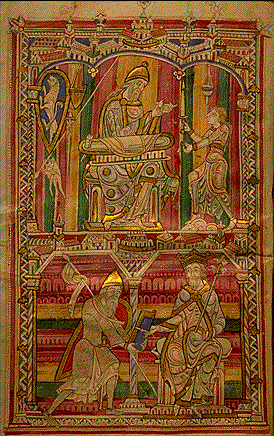

INTRODUCTION A L'ÉTUDE DE LA CHIMIE DES ANCIENS ET DU MOYEN AGE Marcellin Berthelot
SÉNATEUR, MEMBRE DE L'INSTITUT, PROFESSEUR AU COLLÈGE DE FRANCE
AVEC PLANCHES, FIGURES EN PHOTOGRAVURE D'APRÈS LES MANUSCRITS, TABLES ET INDEX PARIS GEORGES STEINHEIL, ÉDITEUR 2, RUE CASIMIR-DELAVIGNE, 2 - l889
partie I - II - III - IV - V - VI - VII -
revu le 10 octobre 2006Plan : introduction - I. Les papyrus de Leide [1. papyrus V - papyrus W - papyrus X - 2. Traduction du papyrus X de Leide [recettes 1 à 111] - 3. Explication des recettes du papyrus de Leide [a. recettes pour écrire en lettres d'or - b. Manipulation des métaux...] - Notes personnelles -
PAPYRY GRECI musei antiquarii publici Lugduni Batavi..... edidit, interpretationem latinam, adnotationem, indices et tabulas addidît C. LEEMANS, Musei antiquarii Lugduni Batavi Director. — PAPYRUS GRECS du musée d'antiquités de Leide, édités, avec une traduction latine, notes, index et planches par C. LEEMANS, directeur du Musée. — Tome II, publié à Leide, au Musée et chez E. J. Brill. 1885. In-4°, viii-310 pages ; 4 planches. — Tiré à 150 exemplaires.
La Chimie des anciens nous est connue principalement par quelques articles de Théophraste, de Dioscoride, de Vitruve et de Pline l'Ancien1 sur la matière médicale, la minéralogie et la métallurgie ; seuls commentaires que nous puissions joindre jusqu'à présent à l'étude et à l'analyse des bijoux, instruments, couleurs, émaux, vitrifications et produits céramiques retrouvés dans les débris des civilisations antiques. L'Egypte en particulier, si riche en objets de ce genre et qu'une tradition constante rattache aux premières origines de l'Alchimie, c'est-à-dire de la vieille Chimie théorique et philosophique ; l'Egypte, dis-je, ne nous a livré jusqu'ici aucun document hiéroglyphique, relatif à l'art mystérieux dès-transformations de la matière. Nous ne connaissons l'antique science d'Hermès, la Science sacrée par excellence, que par les textes des alchimistes gréco-égyptiens; source suspecte, troublée dès les débuts et altérée par les imaginations mystiques de plusieurs générations de rêveurs et de scoliastes. C'est en Egypte cependant, je le répète, que l'Alchimie a pris naissance2 ; c'est là que le rêve de la transmutation des Métaux apparaît d'abord et il a obsédé les esprits Jusqu'au temps de Lavoîsier3. Le rôle qu'il a joué dans les commencements de la Chimie, l'intérêt passionné qu'il a donné à ces premières recherches dont notre science actuelle est sortie, méritent toute l'attention du philosophe et de l'historien. Aussi devons-nous saluer avec joie la découverte des textes authentiques que nous fournissent les papyrus de Leide. La publication de ce volume était réclamée depuis longtemps et attendue (Le premier volume avait paru en 1843) avec impatience par les personnes qui s'intéressent à l'histoire des sciences antiques, et le contenu du volume actuel, déjà connu par une description sommaire de Reuvens (Lettres à M. Letronne, publiées à Leide en 1830), paraissait de nature à piquer vivement la curiosité des archéologues et des chimistes. En effet, l'un des principaux papyrus quiyy trouvent, le papyrus X (p. 199 à 259 du volume actuel), est consacré à des recettes de chimie et d'alchimie, au nombre de cent-une, suivies de dix articles extraits de Dioscoride. C'est le manuscrit le plus ancien aujourd'hui connu, où il soit question de semblables sujets : car il remonte à la fin du troisième siècle de notre ère, d'après Reuvens et Leemans. Ce serait donc là l'un de ces vieux livres d'Alchimie des Egyptiens sur l'or et l'argent, brûlés par Dioclétien vers 290,
« afin qu'ils ne pussent s'enrichir par cet art et en tirer la source de richesses qui leur permissent de se révolter contre les Romains. »
Cette destruction systématique nous est attestée par les chroniqueurs byzantins et par les actes de saint Procope (Voir mon ouvrage : Origines de l'Alchimie, p. 72. 1885) ; elle est conforme à la pratique du droit romain pour les livres magiques, pratique qui a amené l'anéantissement de tant d'ouvrages scientifiques durant le moyen âge. Heureusement que le papyrus de Leide y a été soustrait et qu'il nous permet de comparer jusqu'à un certain point, et sur un texte absolument authentique, les connaissances des Egyptiens du IIIe siècle avec celles des alchimistes gréco-égyptiens, dont les ouvrages sont arrivés jusqu'à nous par des copies beaucoup plus modernes. Les unes et les autres sont liées
étroitement avec les renseignements fournis par Dioscoride, par Théophraste et par Pline sur la minéralogie et la métallurgie des anciens ; ce qui paraît indiquer que plusieurs de ces recettes remontent aux débuts de l'ère chrétienne. Elles sont peut-être même beaucoup plus anciennes, car les procédés techniques se transmettent d'âge en âge. Leur comparaison avec les notions aujourd'hui acquises sur les métaux égyptiens (Origines de l'Alchimie, p. 211), d'une part, et avec les descriptions alchimiques proprement dites, d'autre part, confirme et précise mes inductions précédentes sur le passage entre ces deux ordres de notions. Je me suis attaché à pénétrer plus profondément ces textes, en faisant concourir à la fois les lumières tirées de l'histoire des croyances mystiques des anciens et de leurs pratiques techniques, avec celles que nous fournit la chimie actuelle : je me proposais surtout d'y rechercher des documents nouveaux sur l'origine des idées des alchimistes relatives à la transmutation des métaux, idées qui semblent si étranges aujourd'hui. Mon espoir n'a pas été trompé; je crois, en effet, pouvoir établir que l'étude de ces papyrus fait faire un pas à la question, en montrant avec précision comment les espérances et les doctrines alchimiques sur la transmutation des métaux précieux sont nées des pratiques des orfèvres égyptiens pour les imiter et les falsifier. Le nom même de l'un des plus vieux alchimistes, Phiménas ou Pammenès4, se retrouve à la fois, dans le papyrus et dans le Pseudo-Démocrite, comme celui de l'auteur de recettes à peu près identiques. Etrange destinée de ces papyrus ! ce sont les carnets d'un artisan faussaire et d'un magicien charlatan, conservés à Thèbes, probablement dans un tombeau, ou, plus exactement, dans une momie. Après avoir échappé par hasard aux destructions systématiques des Romains, à des accidents de tout genre pendant quinze siècles, et, chose plus grave peut-être, aux mutilations intéressées des fellahs marchands d'antiquités, ces papyrus nous fournissent aujourd'hui un document sans pareil pour apprécier à la fois les procédés industriels des anciens pour fabriquer les alliages, leur état psychologique et leurs préjugés mêmes relativement à la puissance de l'homme sur la nature. La concordance presque absolue de ces textes avec certains de ceux des alchimistes grecs vient, je le répète, appuyer par une preuve authentique ce que nous pouvions de'jà induire sur l'origine de ces derniers et sur l'époque de leur composition. En même temps la précision de certaines des recettes communes aux deux ordres de documents, recettes applicables encore aujourd'hui et parfois conformes à celles des Manuels Roret, opposée à la chimérique prétention de faire de l'or, ajoute un nouvel étonnement à notre esprit. Comment nous rendre compte de l'état intellectuel et mental des hommes qui pratiquaient ces recettes frauduleuses, destinées à tromper les autres par de simples apparences, et qui avaient cependant fini par se faire illusion à eux- mêmes5, et par croire réaliser, à l'aide de quelque rite mystérieux, la transformation effective de ces alliages semblables à l'or et à l'argent en un or et en un argent véritables ? Quoi qu'il en soit, nous devons remercier vivement M. Leemans d'avoir terminé sur ce point, avec un zèle que la vieillesse n'a pas épuisé, une oeuvre commencée dans son âge mûr, il y a quarante-deux ans. Elle fait partie de la vaste publication des papyrus de Leide, poursuivie par lui depuis près d'un demi-siècle. Les papyrus grecs n'en constituent d'ailleurs qu'une partie relativement minime; ils viennent compléter les impressions antérieures des papyrus grecs de Paris (Tome XVIII, 2e partie, des Notices et extraits des Manuscrits, etc. publiés par l'Académie des inscriptions (1866), volume préparé par Letronne, Brunet de Presie et le regretté Egger), de Turin et de Berlin (Publié par Parthey, sous le patronage de l'Académie de Berlin). J'ai déjà examiné ces derniers au point de vue chimique (Origines de l'Alchimie, p. 331), ainsi que ceux de Leide, d'après les seules indications de Reuvens (Même ouvrage, p. 80-94). Il convient aujourd'hui de procéder à une étude plus approfondie de ces derniers, à l'aide du texte complet désormais publié : je ferai cette étude surtout au point de vue chimique, sur lequel je puis apporter les lumières d'un spécialiste, réservant la discussion philologique des textes à des savants plus compétents. Rappelons d'abord l'origine des papyrus grecs du musée de Leide ; puis nous décrirons sommairement les principaux écrits contenus dans le tome II, tels que les papyrus V, W et X. A la vérité, les deux premiers sont surtout magiques et gnostiques. Mais ces trois papyrus sont associés entre eux étroitement, par le lieu où ils ont été trouvés et même par certains renvois du papyrus X, purement alchimique, au papyrus V, spécialement magique. L'histoire de la magie et du gnosticisme est étroitement liée à celle des origines de l'alchimie : les textes actuels fournissent à cet égard de nouvelles preuves à l'appui de ce que nous savions déjà (Voir également : Origines du l'Alchimie, p. 211). Le dernier papyrus est spécialement chimique. J'en examinerai les recettes avec plus de détail, en en donnant au besoin la traduction, autant que j'ai pu réussir à la rendre intelligible. Les papyrus de Leide, grecs, démotiques et hiéroglyphiques, proviennent en majeure partie d'une collection d'antiquités égyptiennes, réunies au commencement du XIXe siècle par le chevalier d'Anastasi, vice-consul de Suède à Alexandrie. Il céda en 1828 cette collection au gouvernement des Pays-Bas. Un grand nombre d'entre eux ont été publiés depuis, par les ordres du gouvernement néerlandais. Je ne m'occuperai que des papyrus grecs. Ils forment, je le répète, deux volumes in-4°, l'un de 144 pages, l'autre de 310 pages : celui-ci a paru l'an dernier. Le texte grec y est accompagné par une version latine, des notes et un index, enfin par des planches représentant le fac-similé de quelques lignes ou pages des manuscrits. En ce qui touche les planches, on doit regretter que M. Leemans n'ait pas cru devoir faire cette reproduction, au moins pour le second volume, par le procédé de la photo-gravure sur zinc, qui fournit à si bon marché des textes si nets, absolument identiques avec les manuscrits et susceptibles d'être tirés typographiquement d'une façon directe (Voir les Signes et les Notations alchimiques, dans le présent volume). Les planches lithographiées des Papyri græci sont beaucoup moins parfaites et ne donnent qu'une idée incomplète de ces vieilles écritures, plus nettes en réalité, ainsi que j'ai pu m'en assurer sur des épreuves photographiques que je dois à l'obligeance de M. Révillout. Le tome I, qui a paru en 1843, est consacré aux papyrus notés A, B, C, jusqu'à V, papyrus relatifs à des procès et à des contrats, sauf deux, qui décrivent des songes : ces papyrus sont curieux pour l'étude des mœurs et du droit égyptien ; mais je ne m'y arrêterai pas, pour cause d'incompétence. Je ne m'arrêterai pas non plus dans le tome II au papyrus Y, qui renferme seulement un abécédaire, ni au papyrus Z, trouvé à Philse, très postérieur aux autres; car il a été écrit en l'année 391 de notre ère, et renferme la supplique d'Apion, « évoque de la légion qui tenait garnison à Syène, Contre-Syène et Eléphantine » : cette supplique est adressée aux empereurs Théodose et Valentinien, pour réclamer leur secours contre les incursions et déprédations des barbares. Décrivons au contraire avec soin les trois papyrus magiques et alchimiques.
Le papyrus V est bilingue, grec et démotique; il est long de 3m, 60, haut de 24 centimètres ; le texte démotique y occupe 22 colonnes, longues chacune de 30 à 35 lignes. Le texte grec y occupe 17 colonnes de longueur inégale. Le commencement et la fin sont perdus. Il paraît avoir été trouvé à Thèbes. Il a été écrit vers le IIIe siècle, d'après le style et la forme de l'écriture, comme d'après l'analogie de son contenu avec les doctrines gnostiques de Marcus. Le texte grec est peu soigné, rempli de répétitions, de solécismes, de changements de cas, de fautes d'orthographe attribuables au mode de prononciation locale, telles que ai pour e et réciproquement ; ei pour i, u pour o, etc. Il contient des formules magiques : recettes pour philtres, pour incantations et divinations, pour procurer des songes. Ces formules sont remplies de mots barbares ou forgés à plaisir et analogues à celles que l'on lit dans Jamblique (De Mysteriis Egyptiorum) et chez les gnostiques. Donnons seulement l'incantation suivante, qui ne manque pas de grandeur.
Les portes du ciel sont ouvertes ;
Les portes de la terre sont ouvertes ;
La route de la mer est ouverte ;
La route des fleuves est ouverte ;
Mon esprit a été entendu par tous les dieux et les génies ;
Mon esprit a été entendu par l'esprit du ciel ;
Mon esprit a été entendu par l'esprit de la terre ;
Mon esprit a été entendu par l'esprit de la mer ;
Mon esprit a été entendu par l'esprit des neuves.Ce texte rappelle le refrain d'une tablette cunéiforme, citée par F. Lenormand dans son ouvrage sur la magie chez les Chaldéens.
Esprit du ciel, souviens-toi.
Esprit de la terre, souviens-toi.Dans le papyrus actuel on retrouve la trace des vieilles doctrines égyptiennes, défigurées par l'oubli ou elles commençaient à tomber. Les noms juifs, tels que Jao, Sabaoth, Adonaï, Abraham, etc., celui de l'Abraxa, l'importance de l'anneau magique dont la pierre porte la figure du serpent qui se mord la queue, anneau qui procure gloire, puissance et richesse (Papyrus V, col. 8, 1. 24; col.6, 1. 26)6, le rôle prépondérant attribué au nombre sept (Pap.V, col. I, 1. 21, 25, 30 ; col. 4, 1. 13; col. 8, 1. 6 ; col. 9, 1. 20, etc.),
« nombre des lettres du nom de Dieu, suivant l'harmonie des sept tons »7,
l'invocation du grand nom de Dieu (Col. 5, I. 13 ; col. 28, l. 15.), la citation des quatre bases et des quatre vents : tout cela rappelle les gnostiques et spécialement (Pap. V, col. 2, I. 20, 29, etc. Origines de l'Alchimie, p. 34) les sectateurs de Marcus, au IIIe siècle de notre ère. Les pierres gravées de la Bibliothèque nationale de Paris portent de même la figure du serpent ouroboros, avec les sept voyelles et divers signes cabalistiques (Origines de l'Alchimie, p. 62) du même ordre. Ce serpent joue d'ailleurs en Alchimie un rôle fondamental. Le nom de Jésus ne paraît qu'une seule fois dans le papyrus, au milieu d'une formule magique (Pap. V, col. 6, I. 17) et sans attribution propre. Le papyrus n'a donc point d'attaches chrétiennes. Par contre, les Egyptiens, les Grecs et les Hébreux sont fréquemment rapprochés et mis en parallèle dans les invocations (col. 8, I. 15) : ce qui est caractéristique. Signalons aussi le nom des Parthes (Pap. V, col. 8, I. 18.), qui disparurent avant le milieu du IIIe siècle de notre ère et dont il n'est plus question ultérieurement ; il figure dans le papyrus V, aussi bien que dans l'un des écrits de l'alchimiste Zosime8. Plusieurs auteurs sont cités dans le papyrus, mais ils appartiennent au même genre de littérature. Les uns, tels que Zminis le Tentyrite, Hémérius, Agathoclès et Urbîcus, sont des magiciens, inconnus ailleurs. Mais Apollo Bêches (Horus l'Epervier ou Pébéchius)9, Ostanès, Démocrite et Moïse, lui-même, figurent déjà à ce même titre dans Pline l'Ancien, et ils jouent un grand rôle chez les alchimistes. Au contraire, dans le papyrus, Agathodémon10 n'est pas encore évhémérîsé et transformé en un écrivain, comme chez ces derniers : c'est toujours la divinité a au nom magique de laquelle la terre accourt, l'enfer est troublé, les fleuves, la mer, les lacs, les fontaines, sont frappées de congélation, les rochers se brisent ; celle dont le ciel est la tête, l'éther le corps, la terre les pieds, et que l'Océan environne (pap. V, col. 7, 1. 30). Il y a là un indice d'antiquité plus grande. Trois passages méritent une attention spéciale pour l'Histoire de la science ; ce sont : la sphère de Démocrite, astrologico-médicale ; les noms secrets donnés aux plantes par les scribes sacrés ; et les recettes alchimiques. Le mélange de ces notions, dans le même papyrus, avec les incantations et recettes magiques, est caractéristique. Je consacrerai un article spécial à la sphère de Démocrite et aux figures du même ordre qui existent dans plusieurs manuscrits grecs. Les noms sacrés des plantes donnent lieu à des rapprochements analogues entre le papyrus, les écrits alchimiques et l'ouvrage, tout scientifique d'ailleurs, de Dioscoride. Voici le texte du papyrus V (col. 12 fin et col. 13).
« Interprétation tirée des noms sacrés dont se servaient les scribes sacrés, afin de mettre en défaut la curiosité du vulgaire. Les plantes et les autres choses dont ils se servaient pour les images des dieux ont été désignées par eux de telle sorte que, faute de les comprendre, on faisait un travail vain, en suivant une fausse route. Mais nous en avons tiré l'interprétation de beaucoup de descriptions et renseignements cachés. »
Suivent 37 noms de plantes, de minéraux, etc., les noms réels étant mis en regard des noms mystiques. Ceux-ci sont tirés du sang, de la semence, des larmes, de la bile, des excréments et des divers organes (tête, cœur, os, queue, poils, etc.) des dieux égyptiens grécisés (Héphaîstos ou Vulcain, Hermès ou Mercure, Vesta, Helios ou Soleil, Cronos ou Saturne, Hercule, Ammon, Ares ou Mars)11 ; des animaux (serpent, ibis, cynocéphale, porc, crocodile, lion, taureau, épervier)12, enfin de l'homme et de ses diverses parties (tête, œil, épaule). La semence et le sang y reparaissent continuellement : sang de serpent, sang d'Héphaistos, sang de Vesta, sang de l'œîl, etc. ; semence de lion, semence d'Hermès, semence d'Ammon ; os d'ibis, os de médecin, etc. Or cette nomenclature bizarre .se retrouve dans Dioscoride. En décrivant les plantes et leurs usages dans sa Matière médicale, il.donne les synonymes des noms grecs en langue latine, égyptienne, dacique, gauloise, etc., synonymie qui contient de précieux renseignements. On y voit figurer, en outre, les noms tirés des ouvrages qui portaient les noms d'Ostanès (Diosc., Mat. médicale, I, 9; II, 193, 207; III, 105; IV, 33, 126, 175.), de Zoroastre ( Ibid., II, 144; IV, 175.), de Pythagore (Ibid., II, 144, 207; III, 33, 41), de Pétésis ( Ibid., V, 114), auteurs également cités par les alchimistes et par les Geoponica. On y lit spécialement les noms donnés par les prophètes (Diosc., Mat. méd., I, 9, 25, 120, 134; II, 144, 152, 165, 180, etc.; III, 6, 26, 28, etc.; IV, 4, 23, etc.), c'est-à-dire par les scribes sacerdotaux de l'Egypte : j'ai relevé 54 de ces noms, formés précisément suivant les mêmes règles que les noms sacrés du papyrus : sang de Mars, d'Hercule, d'Hermès, de Titan, d'homme, d'ibis, de chat, de crocodile ; sang de l'oeil ; semence d'Hercule, d'Hermès, de chat ; œil de Python ; queue de rat, de scorpion, d'îchneumon ; ongle de rat, d'ibis ; larmes de Junon, etc. Il existe encore dans la nomenclature botanique populaire plus d'un nom de plante de cette espèce : œil de bœuf, dent de lion, langue de chien, etc., lequel nom remonte peut-être jusqu'à ces vieilles dénominations symboliques (Cependant ces noms populaires sont plutôt destinés à faire image. A ce titre, ils auraient pu précéder la nomenclature symbolique et en suggérer l'idée). Le mot de sang dragon13 désigne aujourd'hui la même drogue que du temps de Pline et de Dioscoride. Ces dénominations offraient, dès l'origine, bien des variantes. Car, dans le papyrus comme dans Dioscorîde, un même nom s'applique parfois à deux ou à trois plantes différentes. Ainsi le nom de semence d'Hercule désigne, dans les papyrus, la roquette; dans Discorîde, le safran (I, 25), le myrte sylvestre (IV, 144) et l'ellébore (IV, 148). Le sang de Cronos signifie l'huile de cèdre et le lait de porc, dans le papyrus. D'autres noms ont une signification différente dans le papyrus et dans Dioscoride, quoique unique dans chacun d'eux. Ainsi la semence d'Hermès signifie Panis dans le papyrus ; le bouphthalmon dans Dioscoride (III, 146). Le sang de taureau signifie l'œuf du scarabée dans le papyrus, le Marrubium dans Dioscoride (III, 109). Réciproquement, une même plante peut avoir deux noms différents dans les deux auteurs. L'Artemisia14 s'appelle sang de Vulcain dans le papyrus, sang humain dans Dioscoride (III, 117). Un seul nom se trouve à la fois dans le papyrus et dans Dioscoride, c'est celui de l'Anagallis, désigné par le mot : sang de l'œil. On voit que les nomenclatures des botanistes d'alors ne variaient pas moins que celles de notre temps, alors même qu'elles procédaient de conventions symboliques communes, comme celles des prophètes égyptiens. Quelques-uns de ces mots symboliques ont passé aux alchimistes, mais avec un sens différent; tels sont les noms : semence de Vénus15, pris pour la fleur (oxyde, carbonate, etc.) de cuivre; bile de serpent, pris pour le mercure, ou bien pour l'eau divine16; éjaculation du serpent, pris pour le mercure ; Osiris (Dans Dioscoride, III, 80, c'est le nom d'une plante ), pris pour le plomb (ou le soufre) ; lait de la vache noire, pris pour le mercure tiré du soufre (Lait d'une vache noire, au sens propre, à ce qu'il semble. (Pap. W, col. 3, 1. 43, et col. 4, 1. 4.) ) ; sang de moucheron, pris pour l'eau d'alabastron17 ; boue (ou lie) de Vulcain, pour l'orge, etc. ; toutes désignations tirées du vieux lexique alchimique. Dans le papyrus et dans Dioscoride, on trouve souvent les mêmes mots, mais avec une autre signification. Tout ceci concourt à reconstituer le milieu intellectuel et les sources troublées où a eu lieu l'éclosion des premières théories de la chimie. Arrivons aux quelques notions de cette science dont le papyrus V conserve la trace. Elles se bornent aune recette d'encre, en une ligne (col. 12, 1. 16) et à un procédé pour affiner l'or (col. 6, 1. 18).
- 1° L'encre dont il s'agit est composée avec 4 drachmes de misy18, 2 drachmes de couperose (verte), 2 drachmes de noix de galle, 3 drachmes de gomme et 4 drachmes d'une substance inconnue, désignée par deux Z, dans chacun desquels est engagé une petite lettre complémentaire19. Un signe analogue existe chez les alchimistes et les médecins et paraît signifier pour eux le gingembre (voir plus loin le tableau des signes reproduit d'après une photogravure) ; mais ce sens n'est pas applicable ici. Je crois qu'il s'agit de l'encre mystique fabriquée avec les sept parfums( Voici le texte même du Papyrus W : « Les sept parfums sont : le styrax consacré à Saturne, le malabathrum à Jupiter, le costus à Mars, l'encens au soleil, le nard indien à Vénus, le casia à Hermès, la myrrhe à la lune. » )
et les sept fleurs
(Voici le texte du papyrus W : « Les sept fleurs, d'après Manéthon (l'astrologue), sont : la marjolaine commune, le lis, le lotus, l'Eriphyllium (renoncule ?) le narcisse, la violette blanche, la rosé. » (Pap. W, col. I, 1. 22.) On les broie dans un mortier blanc 21 jours avant la cérémonie et on les sèche à l'ombre ),
au moyen de laquelle on écrivait les formules magiques sur le nitre, d'après le papyrus suivant (pap. W, col. 6, 1. 5 ; col. 3, 1. 8 ; col. 9, 1- 10 ; col. 10,1. 41) : en effet, la lettre Z exprime précisément le nombre sept, et se retrouve, isolée, avec ce sens dans le même papyrus (col. n, 1. 26 ; v. aussi col. 6,1. 5). Cette composition rappelle, par sa complexité, celle du Kyphi, substance sacrée (Origines de l'Alchimie, p. 30. Diosc. Mat. méd. I, 24. ) des Egyptiens.
- 2° Le procédé (Papyri graeci, V, col. 6) pour affiner l'or (iwsiV crisou),
(Le mot iwsi a quatre sens : il signifie : 1° L'opération de la rouille, c'est-à-dire l'oxydation d'un métal;
2° L'affinage du métal, lequel est souvent connexe avec l'oxydation du métal impur, celle-ci tendant à éliminer les métaux étrangers dont les oxydes sont plus stables : ce qui est le cas des métaux alliés à l'or dans la nature ; 3° La virulence, ou possession d'une propriété active spécifique; telle notamment que celle que l'oxydation développe dans certains métaux; mais avec un sens plus compréhensif; 4° Enfin la coloration en violet. Ce dernier sens, qui se trouve chez les alchimistes et qui répond parfois à la formation de certains dérives colorés de l'or, n'est pas applicable ici)20,ne manque pas d'intérêt, il est cité d'ailleurs dans une préparation sur la coloration de l'or, donnée dans le papyrus X alchimique ; ce qui établit la connexité des deux papyrus. Ajoutons qu'il se trouve transcrit entre une formule pour demander un songe (oneirethton) et la description d'un anneau magique qui donne le bonheur; ce qui montre bien le milieu intellectuel d'alors: les mêmes personnes pratiquaient la magie et la chimie. Enfin ce procédé renferme une recette intéressante, par sa ressemblance avec la méthode connue sous le nom de cément royal, à l'aide de laquelle on séparait autrefois l'or et l'argent. Donnons d'abord la traduction de ce texte :
« Prenez du vinaigre piquant (Le texte porte driaou, qui n'a pas de sens ; c'est drimo qu'il faut lire)21,épaississez, prenez de...(lacune), 8 drachmes de sel commun, 2 drachmes d'alun lamelleux (schiste), 4 drachmes de litharge, broyez avec le vinaigre pendant 3 jours, séparez par décantation et employez. Alors ajoutez au vinaigre 1 drachme de couperose, une demi-obole de...(1 drachme = 6 oboles, mesure de poids.), trois oboles de chalcite (Minerai de cuivre, tel que la pyrite), une obole et demie de sory (Produit de l'altération de la pyrite, pouvant renfermer à la fois du sulfate de cuivre et du sulfate de fer basique. Le sory est congénère du misy, produit d'altération analogue, mais moins riche en cuivre, (V. Diosc. Mat. méd., V, 116-118; Pline,H.N., XXXIV, 30,31)22, une silique (Silique = tiers de l'obole, mesure de poids) de sel commun, deux siliques de sel de Cappadoce (Variété de sel gemme.). Faites une lame ayant deux quarts (d'obole ?) Soumettez-la à l'action du feu...jusqu'à ce que la lame se rompe, ensuite prenez les morceaux et regardez-les comme de l'or affiné.
« Ayant pris quatre paillettes (Le texte porte le mot ozeia. Ce mot ne se trouve pas dans les dictionnaires et a fort embarrassé M. Leemans et Reuvens, qui y a vu le nom du roi (ou du prophète) juif Osée. Je le rattacherai à ozoV, nœud ou rameau. Il répondrait au latin ramentum. si fréquent dans Pline) d'or, faites-en une lame, chauffez-la et trempez-la dans de la couperose broyée avec de l'eau et avec une autre (couperose) sèche, battez (une partie)...avec la matière sèche, une autre avec la matière mélangée : déversez la rouille et Jetez dans...»
II y a là deux recettes distinctes. Dans toutes deux figure le sulfate de cuivre plus ou moins ferrugineux, sous les noms de chalcanthan ou couperose et de sory. La seconde recette semble un fragment mutilé d'une formule plus étendue. La première présente une grande ressemblance avec une formule donnée dans Pline pour préparer un remède avec l'or, en communiquant aux objets torréfiés avec lui une propriété spécifique active, désignée par Pline sous le nom de virus. Remarquons que ce mot est la traduction littérale du grec ioV, rouille ou venin, d'où dérive iwosiV, ce qui complète le rapprochement entre la formule de Pline et celle-du papyrus. Voici les paroles de Pline (Hist. Nat., XXXIII, 25) :
« On torréfie l'or dans un vase de terre, avec deux fois son poids de sel et trois fois son poids de misy (Le misy représente le produit de l'oxydation lente des pyrites, renfermant à la fois du sulfate de cuivre et du sulfate de fer plus ou moins basique. (Voir plus haut, page précéd., note 5)) ; puis on répète l'opération avec 2 parties de sel et 1 partie de la pierre appelée schiste (Le schiste de Pline signifie un minerai divisible en lamelles: c'est tantôt de l'alun, tantôt un minerai de fer congénère de l'hématite (Hist. Nat, XXVI, 37 ). De cette façon, il donne des propriétés actives aux substances chauffées avec lui, tout en demeurant pur et intact. Le résidu est une cendre que l'on conserve dans un vase de terre. »
Pline ajoute que l'on emploie ce résidu comme remède. L'efficacité de l'or, le plus parfait des corps, contre les maladies et contre les maléfices est un vieux préjugé23. De là, au moyen âge, l'idée de l'or potable. La préparation indiquée par Pline devait contenir les métaux étrangers à l'or, sous forme de chlorures ou d'oxychlorures. Renfermait-elle aussi un sel d'or ? A la rigueur, il se pourrait que le chlorure de sodium, en présence des sels basiques de peroxyde de fer, ou même du bioxyde de cuivre, dégageât du chlore, susceptible d'attaquer l'or métallique ou allié, en formant du chlorure d'or, ou plutôt un chlorure double de ce métal. Mais la chose n'est pas démontrée. En tous cas, l'or se trouve affiné dans l'opératîon précédente. C'est en effet ce que montre la comparaison de ces textes avec l'exposition du procédé du départ par cémentation, donnée par Macquer (Dictionnaire de chimie, 1778). Il s'agit du problème, fort difficile, qui consiste à séparer l'or de l'argent par voie sèche. On y parvient aujourd'hui aisément par la voie humide, qui remonte au XVIIe siècle. Mais elle n'était pas connue auparavant. Au moyen âge on opérait cette séparation soit au moyen du cément royal24, soit au moyen d'une sorte de coupellation, assez difficile à réaliser, et où le soufre et l'antimoine remplaçaient le plomb. Voici la description donnée par Macquer du cément royal, usité autrefois dans la fabrication des monnaies. On prend 4 parties de briques pilées et tamisées25, 1 partie de vitriol vert, calciné au rouge, 1 partie de sel commun ; on en fait une pâte ferme que l'on humecte avec de l'eau ou de l'urine. On la stratifie avec des lames d'or minces, dans un pot de terre; on lute le couvercle et on chauffe à un feu modéré pendant vingt-quatre heures, en prenant garde de fondre l'or. On répète au besoin l'opération. En procédant ainsi, l'argent et les autres métaux se dissolvent dans le chlorure de sodium, avec le concours de l'action oxydante et, par suite, chlorurante, exercée par l'oxyde de fer dérivé du vitriol ; tandis que l'or demeure inattaqué. Ce procédéétait même employé, d'après Macquer, par les orfèvres, qui ménageaient l'action, de façon à changer la surface d'un bijou en or pur, tandis que la masse centrale demeurait à bas titre. Il est facile de reconnaître la similitude de ce procédé avec la recette de Pline etavec celle du papyrus égyptien. Geber, Albert le Grand (pseudonyme) et les chimistes du moyen âge en ont gardé constamment la tradition.
Passons au papyrus W, qui fournit plus spécialement des lumières sur les relations entre la magie et le gnosticisme juif. Il est formé de 7 feuillets et demi, haut de 0m27, large de 0m,32. Il renferme 25 pages de texte en lettres onciales, quelques-unes cursives, chacune de ces pages a de 52 à 31 lignes, parfois moins. Il remonte au IIIe siècle et se rattache fort étroitement aux doctrines de Marcus et des Carpocratiens (Matter, Hist. du gnosticisme, t. II, p. 265). Il est tiré principalement des ouvrages apocryphes de Moîse, écrits à cette époque; il cite, parmi ces ouvrages, la Monade, le Livre secret, la Clef (On attribuait à Hermès un ouvrage du même titre, KleiV, adressé à Toth, et cité par Lactance et par Stobée.)26, le Livre des Archanges, le Lîvre lunaire, peut-être aussi un Livre sur la loi, le 5e livre des Ptolémaïques, le livre Panarètos
(Un ouvrage du même titre, attribue à Hermès Trismégiste, est cité par Scaliger, dans son édition de Manilius, p. 209. Il y était question des sept « sorts » répondant aux sept planètes, savoir :oi epta klhroi en th Panaretw Trismegistou. Saturne : nemesiV ; Jupiter : nikh ; Mars : tolma ; Soleil : agaqodaimwn ; Vénus : erwV ; Mercure : anagkh ; Lune : agath tukh )27
: ces derniers donnés sans nom d'auteur. Tous ces ouvrages sont congénères et probablement contemporains de la Chimie domestique de Moïse, dont j'ai retrouvé des fragments étendus dans les alchimistes grecs (Origines de l'Alchimie, p. 55, 123, 171) ainsi que des écrits de Moise le magicien cité dans Pline (i): c'est la même famille d'apocryphes. Le manuscrit actuel est, d'ailleurs, rempli de solécismes et de fautes d'orthographe, attestant l'ignorance des copistes égyptiens. On y cite Hermès Ptéryx, Zoroastre le Persan, Tphé l'hiérogrammate, auteur d'un livre adressé au roi Ochus, Manéthon l'astrologue, le même sans doute que celui dont nous possédons un poème, les mémoires d'Evenus, Orphée le théologien, Erotyle, dans ses Orphiques28. Les noms d'Orphée et d'Erotyle se retrouvent aussi chez les alchimistes grecs. Le nom du second, cité aussi par Zosime, a été d'ailleurs méconnu et pris pour celui d'un instrument chimique; sa reproduction dans le Papyrus W(Papyri, t. II, p. 254) en fixe le sens définitif. Toth (t. II, p. 103) et l'étoile du chien (II, 109-115) rappellent la vieille Egypte. Les noms d'Abraham, Isaac, Jacob, Michel (t. II,p. 144-153), celui des deux Chérubins (t. II, p. 101), l'intervention du temple de Jérusalem (t. II, p. 99), montrent les affinités juives de l'auteur. Apollon et le serpent Pythien (II, 88) manifestent le mélange de traditions grecques, aussi bien que dans les papyrus de Berlin et chez les alchimistes (Origines de l'Alchimie, p. 333). Ces affinités sont en même temps gnostiques. C'est ici le lieu de rappeler que les Marcosiens avaient composé un nombre immense d'ouvrages apocryphes, d'après Irénée (Hérésies, I, 17). Le titre même énoncé à la première ligne du papyrus :
« livre sacré appelé Monas, le huitième de Moïse, sur le nom saint »,
est tout à fait conforme aux doctrines des Carpocratiens, pour lesquels Monas était le grand Dîeu ignoré (J. Matter, Hist. du gnosticisme, t. II, p. 265.). Le grand nom ou le saint nom possède des vertus magiques (Papyri, t. II, p. 99); il rend invisible, il attire la femme vers l'homme, il chasse le démon, il guérit les convulsions, il arrête les serpents, il calme la colère des rois, etc. Le saint nom est appelé aussi Ogdoade (Papyri, t. II, p. 141)29 et formé de sept voyelles, la monas complétant le nombre huit. Le nombre sept joue ici, comme dans toute cette littérature, un rôle prépondérant : il est subordonné à celui des planètes divines, à chacune desquelles est consacrée une plante et un parfum spécial ( Papyri, t. II, p. 33 ; voir ci-dessus les notes de la p. 13). Sans nous arrêter aux formules d'incantation et de conjuration, farcies de mots barbares, nous pouvons relever, au point de vue des analogies historiques, la mention du serpent qui se mord la queue et celle des sept voyelles entourant la figure du crocodile à tête d'épervier, sur lequel se tient le Dieu polymorphe (Papyri, t. II, p. 85). C'est encore là une figure toute pareille à celles qui sont tracées sur les pierres gravées de la Bibliothèque nationale. [Origines de l'alchimie, p. 65). Citons aussi la mention de l'Agathodémon30 ou serpent divin :
« le ciel est ta tête, l'éther ton corps, la terre tes pieds, et l'eau t'environne ; tu es l'Océan qui engendre tout bien et nourrit la terre habitée. »
J'y relève, en passant, quelques mots chimiques pris dans un sens inaccoutumé : tel est le « nitre tétragonal »31 (p. 85), sur lequel on doit écrire des dessins et des formules compliquées. Ce n'était assurément pas notre salpêtre, ni notre carbonate de soude, qui ne se prêteraient guère à de pareilles opérations. Le sulfate de soude fournirait peut-être des lames suffisantes ; mais il est plus probable qu'il s'agît ici d'un sel insoluble, suffisamment dur, tel que le carbonate de chaux (spath calcaire), ou le sulfate de chaux32, peut-être le feldspath : car il est question plus loin de lécher et de laver deux de ses faces (Papyri, t. II, p. 91) ; il y a là une énigme. Sur ce nitre, on écrit avec une encre faite des sept fleurs et des sept aromates (Papyri, t. II, p. 90, 99). On doit y peindre une « stèle » sacrée renfermant l'invocation suivante :
« Je t'invoque, toi, le plus puissant des dieux, qui as tout créé ; toi, né de toi-même, qui vois tout, sans pouvoir être vu. Tu as donné au soleil la gloire et la puissance. A ton apparition, le monde a existé et la lumière a paru. Tout t'est soumis, mais aucun des dieux ne peut voir ta forme, parce que tu te transformes dans toutes... Je t'invoque sous le nom que tu possèdes dans la langue des oiseaux, dans celle des hiéroglyphes, dans celle des Juifs, dans celle des Egyptiens, dans celle des cynocéphales... dans celle des éperviers, dans la langue hiératique...»
Ces divers langages mystiques reparaissent un peu plus loin, après une invocation à Hermès et en tête d'un récit gnostique de la création, récit que je reproduis en l'abrégeant, afin de donner une idée plus complète de ce genre de littérature qui a eu un rôle historique si considérable.
« Le Dieu aux neufs formes te salue en langage hiératique... et ajoute ; je te précède, Seigneur. Ce disant, il applaudît trois foîs. Dieu rit : cha, cha, cha, cha, cha, cha, cha (sept fois), et Dieu ayant ri, naquirent les sept dieux qui comprennent le monde ; car ce sont eux qui apparurent d'abord. Lorsqu'il eut éclaté de rire, la lumière parut et éclaira tout ; car le Dieu naissait sur le monde et sur le feu. Bessun, berithen, berio. II éclata de rire pour la seconde fois : tout était eau. La terre, ayant entendu le son, s'écria, se courba, et l'eau se trouva partagée en trois. Le Dieu apparut, celui qui est préposé à l'abîme; sans lui l'eau ne peut ni croître, ni diminuer. »
Au troisième éclat de rire de Dieu, apparaît Hermès ; au cinquième, le Destin, tenant une balance et figurant la Justice33. Son nom signifie la barque de la révolution céleste : autre réminiscence de la vieille mythologie égyptienne. Puis vient la querelle d'Hermès et du Destin, réclamant chacun pour soi la Justice. Au septième rire, l'âme naît, puis le serpent Pythien34, qui prévoit tout (Voir plus haut (p. 16, note 3) les sept klhroi, tirés du livre Panaretos). J'ai cité, en l'abrégeant, tout ce travestissement gnostique du récit biblique des sept jours de la création, afin d'en montrer la grande ressemblance avec la Pistis Sophia et les textes congénères, et pour mettre en évidence le milieu dans lequel vivaient et pensaient les premiers alchimistes.
Nous allons maintenant examiner le papyrus X, le plus spécialement chimique : il témoigne d'une science des alliages et colorations métalliques fort subtile et fort avancée, science qui avait pour but la fabrication et la falsification des matières d'or et d'argent : à cet égard, il ouvre des jours nouveaux sur l'origine de l'idée de la transmutation des métaux. Non seulement l'idée est analogue ; mais les pratiques exposées dans ce papyrus sont les mêmes, comme je l'établirai, que celles des plus vieux alchimistes, tels que le Pseudo- Démocrite35, Zosime, Olympiodore, le Pseudo-Moïse. Cette démonstration est de la plus haute importance pour l'étude des origines de l'alchimie. Elle prouve en effet que ces origines ne sont pas fondées sur des imaginations purement chimériques, comme on l'a cru quelquefois ; mais elles reposaient sur des pratiques positives et des expériences véritables, à l'aide desquelles on fabriquait des imitations d'or et d'argent. Tantôt le fabricant se bornait à tromper le public, sans se faire illusion sur ses procédés ; c'est le cas de l'auteur des recettes du papyrus. Tantôt, au contraire, il a joutait à son art l'emploi des formules magiques ou des prières, et il devenait dupe36 de sa propre industrie. Les définitions du mot « or », dans le lexique alchimique grec qui fait partie des vieux manuscrits, sont très caractéristiques : elles sont au nombre de trois, que voici :
« On appelle or le blanc, le sec et le jaune et les matières dorées, à l'aide desquelles on fabrique les teintures solides ; »
Et ceci :
« L'or, c'est la pyrite, et la cadmie et le soufre ; »
Ou bien encore :
« L'or, ce sont tous les fragments et lamelles jaunis et divisés et amenés à perfection. »
On voit que le mot « or », pour les alchimistes comme pour les orfèvres des papyrus de Leide, et j'ajouterai même, à certains égards, pour les orfèvres et les peintres d'aujourd'hui, avait un sens complexe : il servait à exprimer l'or vrai d'abord, puis l'or à bas titre, les alliages à teinte dorée, tout objet doré à la surface, enfin toute matière couleur d'or, naturelle ou artificielle. Une certaine confusion analogue règne même de nos jours, dans le langage courant ; mais elle n'atteint pas le fond des idées, comme elle le fit autrefois. Cette extension de la signification des mots était en effet commune chez les anciens ; le nom de l'émeraude et celui du saphir, par exemple, étaient appliqués par les Egyptiens aux pierres précieuses et vitrifications les plus diverses (Origines de l'Alchimie, p. 218). De même que l'on imitait l'émeraude et le saphir naturels, on imitait l'or et l'argent. En raison des notions fort confuses que l'on avait alors sur la constitution de la matière, on crut pouvoir aller plus loin et on s'imagina y parvenir par des artifices mystérieux. Mais, pour atteindre le but, il fallait mettre en œuvre les actions lentes de la nature et celles d'un pouvoir surnaturel37.
« Apprends, ô ami des Muses, dit Olympiodore, auteur alchimique du commencement du Ve siècle de notre ère, apprends ce que signifie le mot économie (Il s'agit du traitement mis en pratique pour fabriquer l'or.) et ne vas pas croire, comme le font quelques-uns, que l'action manuelle seule est suffisante : non, il faut encore celle de la nature, et une action supérieure à l'homme. »
Et ailleurs :
« Pour que la composition se réalise exactement, dit Zosime, demandez par vos prières à Dieu de vous enseigner, car les hommes ne transmettent pas la science; ils se jalousent les uns les autres, et l'on ne trouve pas la voie..... Le démon Ophiuchus entrave notre recherche, rampant de tous côtés et amenant tantôt des négligences, tantôt la crainte, tantôt l'imprévu, en d'autres occasions les afflictions et les châtiments, afin de nous faire abandonner l'œuvre. »
De là la nécessité de faire intervenir les prières et les formules magiques, soit pour conjurer les démons ennemis, soit pour se concilier la divinité. Tel était le milieu scientifique et moral au sein duquel les croyances à la transmutation des métaux se sont développées : il importait de le rappeler. Mais il est du plus haut intérêt, à mon avis, de constater quelles étaient les pratiques réelles, les manipulations positives des opérateurs. Or ces pratiques nous sont révélées par le papyrus de Leide, sous la forme la plus claire et en concordance avec les recettes du Pseudo-Démocrite et d'Olympiodore. Nous sommes ainsi conduits à étudier avec détail les recettes du papyrus, qui contient la forme première de tous ces procédés et doctrines. Dans le Pseudo-Démocrite, et plus encore dans Zosime, elles sont déjà compliquées par des imaginations mystiques ; puis sont venus les commentateurs, qui ont amplifié de plus en plus la partie mystique, en obscurcissant ou éliminant la partie pratique, à la connaissance exacte de laquelle ils étaient souvent étrangers. Les plus vieux textes, comme il arrive souvent, sont ici les plus clairs. Donnons d'abord ce que l'on sait sur l'origine de ce papyrus, ainsi que sa description. Le papyrus X a été trouvé à Thèbes, sans doute avec les deux précédents ; car la recette 15 qui s'y trouve s'en réfère au procédé d'affinage de l'or cité dans le papyrus V (v. plus haut, p. 13). Il est formé de dix grandes feuilles, hautes de 0m30, larges de 0m34, pliées en deux dans le sens de la largeur. Il contient seize pages d'écriture, de vingt-huit à quarante-sept lignes, en majuscules de la fin du IIIe siècle. Il renferme soixante- quinze formules de métallurgie, destinées à composer des alliages, en vue de la fabrication des coupes, vases, images et autres objets d'orfèvrerie ; à souder ou à colorer superficiellement les métaux; à en essayer la pureté, etc.; formules disposées sans ordre et avec de nombreuses répétitions. Il y a en outre quinze formules pour faire des lettres d'or ou d'argent, sujet connexe avec le précédent. Le tout ressemble singulièrement au carnet de travail d'un orfèvre, opérant tantôt sur les métaux purs, tantôt sur les métaux alliés ou falsifiés. Ces textes sont remplis d'idiotismes, de fautes d'orthographe et de fautes de grammaire : c'est bien là la langue pratique d'un artisan. Ils offrent d'ailleurs le cachet d'une grande sincérité, sans ombre de charlatanisme, malgré l'improbité professionnelle des recettes. Puis viennent onze recettes pour teindre les étoffes en couleur pourpre, ou en couleur glauque38. Le papyrus se termine par dix articles tirés de la Matière médicale de Dioscoride, relatifs aux minéraux mis en œuvre dans les recettes précédentes. On voit par cette énumération que le même opérateur pratiquait l'orfèvrerie et la teinture des étoffes précieuses. Mais il semble étranger à la fabrication des émaux, vitrifications, pierres précieuses artificielles. Du moins aucune mention n'en est faite dans ces recettes, quoique le sujet soit longuement traité dans les écrits des alchimistes. Le papyrus X ne s'occupe d'ailleurs que des objets d'orfèvrerie fabriqués avec les métaux précieux; les armes, les outils et autres gros ustensiles, ainsi que les alliages correspondants, ne figurent pas ici. Les recettes relatives aux métaux sont inscrites sans ordre, à la suite les unes des autres. Cherchons-en d'abord les caractères généraux. En les examinant de plus près, on reconnaît qu'elles ont été tirées de divers ouvrages ou traditions. En effet, les unités auxquelles se rapportent ces compositions métalliques sont différentes, quoique spéciales pour chaque recette. L'écrivain y parle tantôt de mesures précises, telles que les mines, statères, drachmes, etc. (le mot drachme ou le mot statère étant employé de préférence) ; tantôt il se sert du mot partie ; tantôt enfin du mot mesure. La teinture des métaux est désignée par plusieurs mots distincts :
- crusiou crwsiV , teinture en or ;
- argurou cruswsiV, dorure de l'argent ;
- calkou crusoujanouV polhsiV, coloration (superficielle) du cuivre en or.
- crisiV, coloration par enduits ou vernis.
- crusou katabajh ; il s'agît d'une teinture en or, superficielle et opérée par voie humide.
- ashmou katabajh ; cette fois c'est une teinture en argent, ou plutôt en asèm, faite à chaud, avec trempe.Nous avons affaire, je le répète, à plusieurs collections de recettes de dates et d'origines diverses, mises bout à bout. C'est ce que confirment les répétitions qu'on y rencontre. Ainsi, la même recette pour préparer l'asèm (Voir plus loin ces diverses recettes.) fusible (amalgame de cuivre et d'étain) reparaît trois fois. L'asèm, dans une formule où il est spécialement regardé comme un amalgame d'étain, figure deux fois avec de légères variantes ; la coloration en asèm, deux fois ; la coloration du cuivre en or à l'aide du cumin, trois fois; la dorure apparente, à l'aide de la chélidoine et du mîsy, deux fois ; l'écriture en lettres d'or, à l'aide de feuilles d'or et de gomme, deux fois.39 D'autres recettes sont reproduites, une fois en abrégé, une autre fois avec développement : par exemple, la préparation de la soudure d'or, l'écriture en lettres d'or au moyen d'un amalgame de ce métal, la même écriture au moyen du soufre et du corps appelé alun. En discutant de plus près ces répétitions, on pourrait essayer de reconstituer les recueils originels, si ce travail semblait avoir quelque intérêt. Les recettes mêmes offrent une grande diversité dans le mode de rédaction : les unes sont les descriptions minutieuses de certaines opérations, mélanges et décapages, fontes successives, avec emploi de fondants divers40. Dans d'autres, les proportions seules des métaux primitifs figurent, avec l'énoncé sommaire des opérations, les fondants eux-mêmes étant omis. Par exemple (pap. X, col. I, 1. 5), on lit : le plomb et l'étain sont purifiés par la poix et le bitume; ils sont rendus solides par l'alun, le sel de Cappadoce41 et la pierre de Magnésie jetés à la surface. Dans certaines recettes on n'indique que les proportions des ingrédients, et sans qu'il soit fait mention des opérations auxquelles ils sont destinés. Ainsi :
« Asèm fusible (col. 2, 1. 14) : cuivre de Chypre, une mine ; étain en baguettes, une mine ; pierre de Magnésie, seize drachmes ; mercure, huit drachmes ; pierre de Paros, vingt drachmes. »
Parfois même l'auteur se borne à donner la proportion de quelques-uns des produits seulement:
« Pour écrire en lettres d'or (col. 6, 1. i): litharge couleur d'or une partie, alun deux parties. »
Ceci ressemble beaucoup à des notes de praticiens, destinées à conserver seulement le souvenir d'un point essentiel, le reste étant confié à la mémoire. Les recettes finales : asèm égyptien, d'après Phiménas le Saïte ; eau de soufre ; dilution de l'asèm, etc., ont au contraire un caractère de complication spéciale qui rappelle les alchimistes ; aussi bien que les signes planétaires de l'or et de l'argent, inscrits dans la dernière. Deux questions générales se présentent encore, avant d'aborder l'étude détaillée de ces textes : celle des auteurs cités et celle des signes ou abréviations. Un seul auteur est nommé dans le papyrus X, sous le titre : Procédé de Phiménas le Saïte pour préparer l'asèm égyptien (col. 11,1. 15). Ce nom paraît le même que celui de Pamménès, prétendu précepteur de Démocrite, cité par Georges le Syncelle42, et qui figure dans les textes alchimistes de nos manuscrits (Origines de l'Alchimie, p. 170). Ce nom s'écrit aussi Paménasis et Paménas, peut-être même Phaminis : dévoué au dieu Mendès ; dévoué au roi Menas (Papyri graeci, t. II, p. 250. On peut en rapprocher le nom grécisé de Ménodore.). Le rapprochement entre Phiménas et Pamménès doit être regardé comme certain : attendu que la dernière des deux recettes données sous le nom de Phiménas dans le papyrus se trouve presque sans changement dans le Pseudo-Démocrite, parmi des recettes attribuées pareillement à l'Egyptien Pamménès : j'y reviendrai. II y a quelque intérêt à comparer les signes et abréviations du papyrus avec les signes des alchimistes. Je note d'abord le signe de l'or (col. 12, 1. 20), qui est le même que le signe astronomique du soleil, précisément comme chez les alchimistes : c'est le plus vieil exemple connu de cette identification. A côté figure le signe lunaire de l'argent
(le signe de l'or est absolument certain. Quant à celui de l'argent, M. Leemans a pris ce signe pour un B : il est assez mal dessiné, comme le montre la photographie que je possède ; mais le texte ne me paraît pas susceptible d'une autre interprétation. M. Leemans dans ses notes (t. II, p. 257 le traduit aussi par Luna ; mais il n'a pas compris qu'il s'agissait ici de l'or et de l'argent).
Ces notations symboliques ne s'étendent pas encore aux autres métaux. On trouve aussi dans le papyrus (col. 9,1. 42 et 44) un signe en forme de pointe de flèche, à la suite des mots qeiou apurou (soufre apyre) : ce signe est pareil à celui qui désigne le fer, ou, dans certains cas, répété deux fois, les pierres, dans les écrits alchimiques (voir les photogravures que je reproduis plus loin dans le présent volume : planche I ; plnche II, 1. 3 ; pl. IV, 1. 25 ; pl. VIII, 1. 23). Dans le papyrus il semble qu'il exprime une mesure de poids. Les autres signes sont surtout des abréviations techniques, parmi lesquelles je note celle de l'alun lamelleux stupthria scisth; : l'une d'elles en particulier (pap. X, col. 6,1. 19) est toute pareille à celle des alchimistes (ibid., pl. II, 1. 5 à droite ; pl. IV, 1. 21). Les noms des mesures sont abrégés ou remplacés par des signes, conformément à un usage qui existe encore de notre temps dans les recettes techniques de la pharmacie. Il convient d'entrer maintenant dans l'examen détaillé des cent onze articles du papyrus : articles relatifs aux métaux, au nombre de quatre-vingt-dix, dont un sur l'eau divine ; articles sur la teinture en pourpre, au nombre de onze ; enfin dix articles extraits de Dioscorîde. La traduction complète des articles sur les métaux va être donnée et suivie d'un commentaire; mais je ne m'arrêterai guère sur les procédés de teinture proprement dite, fondés principalement sur l'emploi de l'orcanette et de l'orseille43, procédés dont quelques-uns sont à peine indiqués en une ligne : comme si l'écrivain avait copié des lambeaux d'un texte qu'il ne comprenait pas. D'autres sont plus complets. Le tout est du même ordre que la recette de teinture en pourpre du Pseudo-Démocrite, contenue dans les manuscrits alchimiques et dont j'ai publié naguère le texte et la traduction. J'ai collationné avec soin les dix articles extraits de Dioscoride, tous relatifs à des minéraux employés dans les recettes, et qui donnent la mesure des connaissances minéralogiques de l'auteur du papyrus. Ils concernent les corps suivants:
- Arsenic (notre orpiment) ;
- Sandaraque (notre réalgar) ;
- Misy (sulfate basique de fer, mêlé de sulfate de cuivre) ;
- Cadmie (oxyde de zinc impur, mêlé d'oxyde de cuivre, voire même d'oxyde
de plomb, d'oxyde d'antimoine, d'acide arsénieux, etc) ;
- Soudure d'or ou chrysocolle44 (signifiant à la fois un alliage d'or et d'argent ou de plomb, ou bien la malachite et divers corps congénères) ;
- Rubrique de Sinope45 (vermillon, ou minium, ou sanguine) ;
- Alun (notre alun et divers autres corps astringents) ;
- Natron46 (nîtrum des anciens, notre carbonate de soude, parfois aussi le sulfate de soude) ;
- Cinabre (notre minium et aussi notre sulfure de mercure) ;
- Enfin Mercure.Le texte du papyrus sur ces divers points est, en somme, le même que le texte des manuscrits connus de Dioscoride (édition Sprengel, 1829); à cela près que l'auteur du papyrus a supprimé les vertus thérapeutiques des minerais, le détail des préparations et souvent celui des provenances. Ces suppressions, celle des propriétés médicales en particulier, sont évidemment systématiques. Quant aux variantes de détail, elles sont nombreuses ; mais la plupart n'ont d'intérêt que pour les grammairiens ou pour les éditeurs de Dioscoride. Je note seulement que, dans l'article Cinabre, l'auteur du papyrus distingue sous le nom de minium le cinabre d'Espagne ; tandis que Sprengel a adopté la variante ammion (sable ou minerai)47 : cette confusion entre le nom du cinabre et celui du minium existe aussi dans Pline et ailleurs. L'article Mercure donne lieu à des remarques plus importantes. On y trouve dans le papyrus, comme dans le texte de l'édition classique de Sprengel, le mot ambix désignant le couvercle d'un vase, couvercle à la face inférieure duquel se condensent les vapeurs du mercure sublimé (aiqalh)48 : ce même mot, joint à l'article arabe al, a produit le nom alambic. On voit que l'ambix est le chapiteau d'aujourd'hui. L'alambic proprement dit etl'aludel, instrument plus voisin encore de l'appareil précédent, sont d'ailleurs décrits dans les alchimistes grecs : ils étaient donc connus dès le IVe ou Ve siècle de notre ère. Il manque à l'article Mercure du papyrus une phrase célèbre que Hœfer, dans son Histoire de la chimie (t. I, p. 149, 2° édition) avait traduite dans un sens alchimique :
« Quelques-uns pensent que le mercure existe essentiellement et comme partie constituante des métaux. »49
Evioi de istorousi kai kaq eauthn en toiV metalloiV euriskesqai thn udrarguron
J'avais d'abord adopté cette interprétation de Hœfer : mais en y pensant davantage, je crois que cette phrase signifie seulement :
« quelques-uns rapportent que le mercure existe à l'état natif dans les mines. »
En effet le mot metalla a le double sens de métaux et de mines, et ce dernier est ici plus naturel. En tous cas la phrase manque dans le papyrus : soit que le copiste l'aît supprimée pour abréger ; soit qu'elle n'existât pas alors dans les manuscrits,ayant été intercalée plus tard par quelque annotateur. Une autre variante n'est pas sans intérêt, au point de vue de la discussion des textes, dans l'article Mercure. Le texte donné par Sprengel porte :
« on garde le mercure dans des vases de verre, ou de plomb, ou d'étain, ou d'argent ; car il ronge toute autre matière et s'écoule. »
La mention du verre est exacte ; mais celle des vases de plomb, d'étain, d'argent est absurde ; car ce sont précisément ces métaux que le mercure attaque : elle n'a pu être ajoutée que par un commentateur ignorant. Or le papyrus démontre qu'il en est réellement ainsi : car il parle seulement des vases de verre, sans faire mention des vases métalliques. Zosime insiste aussi sur ce point. On sait que l'on transporte aujourd'hui le mercure dans des vases de fer, dont l'emploi ne paraît pas avoir été connu des anciens. Venons à la partie vraiment originale du papyrus. Je vais présenter d'abord la traduction des articles relatifs aux métaux, au nombre de quatre-vingt-dix, dont un article sur l'eau de soufre ou eau divine ; et celle des articles sur la teinture, au nombre de onze ; puis j'en commenterai les points les plus importants (Papyri Graeci de Leide, t. II, p. 199 à 259. — Quelques mois après l'impression de mon travail dans le Journal des Savants, M. le Dr W. Pleijte a publié en hollandais un mémoire sur l'Asemos, avec étude chimique par le Dr W. K. J. Schoor, dans les Verslagen des koninklijke Akademie van Wetenschappen, Amsterdam (Juin 1886; p. 211 à 236). Il confirme en général mes propres résultats.).
1. Purification et durcissement du plomb.
« Fondez-le, répandez à la surface de l'alun lamelleux et de la couperose réduits en poudre fine et mélangés, et il durcira. »
2. Autre (purification) de l'étain.
« Le plomb et l'étain blanc sont aussi purifiés par la poix et le bitume. Ils sont rendus solides par l'alun et le sel de Cappadoce, et la pierre de Magnésie (Ce n'est pas notre magnésie, mais l'oxyde magnétique de fer, ou quelque autre minerai noir, roux (pyrite) ou blanc, venant des villes ou provinces qui portaient le nom de Magnésie (Voir PLINE, H. N., XXXVII, 25.) Chez les alchimistes le sens du mot s'est encore étendu.), jetée à leur surface. »
3. Purification de l'étain que l'on jette dans le mélange de l'asèm (Asèm désignait divers alliages destinés à imiter l'or et l'argent ; voir plus loin.).
« Prenez de l'étain purifié de toute autre substance, fondez-le, laissez-le refroidir; après l'avoir recouvert d'huile et bien mélangé, fondez-le de nouveau; ensuite ayant broyé ensemble de l'huile, du bitume et du sel, frottez-en le métal, et fondez une troisième fois; après fusion, mettez à part l'étain après l'avoir purifié par lavage; car il sera comme de l'argent durci. Lorsque vous voudrez l'employer dans la fabrication des objets d'argent, de telle sorte qu'on ne le reconnaisse pas et qu'il ait la dureté de l'argent, mêlez 4 parties d'argent, 3 parties d'étain, et le produit deviendra comme un objet d'argent. »
C'est la fabrication d'un alliage d'argent et d'étain, destiné à simuler l'argent, ou plutôt un procédé pour doubler le poids du premier métal.50
« Poix liquide et bitume, une partie de chaque; jetez (sur l'étain), foulez, agitez. Poix sèche, 20 drachmes ; bitume, 12 drachmes. »
« Etain, 12 drachmes; mercure, 4 drachmes; terre de Chio (Sorte d'argile. — Diosc., Mat. méd., V. 173. — PLINE, H. N., XXXV, 56.), 2 drachmes. A l'étain fondu, ajoutez la terre broyée, puis le mercure, agitez avec du fer, et mettez en œuvre (le produit). »
Voici comment on opère le doublement de l'asèm.
« On prend : cuivre affiné, 40 drachmes; asèm, 8 drachmes ; étain en bouton, 40 drachmes ; on fond d'abord le cuivre et, après deux chauffes, l'étain ; ensuite l'asèm. Lorsque tous deux sont ramollis, refondez à plusieurs reprises et refroidissez au moyen de la composition précédente (Amalgame d'étain décrit dans l'article 5.). Après avoir augmenté le métal par de tels procédés, nettoyez-le avec le coupholithe (Talc ou sélénite.).51 Le triplement s'effectue par les mêmes procédés, les poids étant répartis conformément à ce qui a été dit plus haut. »
C'est un bronze blanc amalgamé, analogue à certain métal de cloche.
7. Masse inépuisable (ou perpétuelle).
« Elle se prépare par les procédés définis dans le doublement de l'asèm. Si vous voulez prélever sur la masse 8 drachmes, séparez-les et refondez 4 drachmes de ce même asèm ; fondez-les trois fois et répétez, puis refroidissez et mettez-les en réserve dans le coupholithe. »
Voir aussi recette 60. II y a là l'idée d'un ferment, destiné à concourir à la multiplication de la matière métallique.52
« Prenez de l'étain en petits morceaux et mou, quatre fois purifié; prenez-en 4 parties et 3 parties de cuivre blanc pur et 1 partie d'asém. Fondez, et, après la fonte, nettoyez à plusieurs reprises, et fabriquez avec ce que vous voudrez : ce sera de l'asèm de première qualité, qui trompera même les ouvriers. »
Alliage blanc, analogue aux précédents; avec intention de fraude.
9. Fabrication de l'asèm fusible.
« Cuivre de Chypre, 1 mine; étain en baguettes, 1 mine; pierre de Magnésie, 16 drachmes; mercure, 8 drachmes ? pierre de Poros (PLINE, H.N., XXXVI, 28. Pierre blanche et dure, assimilée au marbre de Paros.)53, 20 drachmes ».
« Ayant fondu le cuivre, jetez-y l'étain, puis la pierre de Magnésie en poudre, puis la pierre de Poros, enfin le mercure ; agitez avec du fer et versez au moment voulu. »
Alliage analogue, avec addition de mercure.
« Prenez du cuivre de Chypre affiné, jetez dessus parties égales, c'est-à-dire 4 drachmes de sel d'Ammon91 (Ce mot a changé de sens; à la fin du moyen âge il signifiait notre chlorhydrate d'ammoniaque; mais à l'origine il s'appliquait à un sel fossile qui se développait par efflorescence, sel analogue au natron. PLINE, H. N; XXXI, 39. On y reviendra dans le présent ouvrage, p. 45. ) et 4 drachmes d'alun; fondez et ajoutez parties égales d'asèm. »
Bronze enrichi en cuivre.
« Purifiez avec soin le plomb avec la poix et le bitume, ou bien l'étain; et mêlez la cadmie (Voir p. 26) et la litharge, à parties égales, avec le plomb, et remuez Jusqu'à mélange parfait et solidification. On s'en sert comme de l'asèm naturel (L'asèm naturel est l'électrum, alliage d'or et d'argent, crusoV leukoV d'Hérodote. Voir Origines de l'Alchimie, p. 215.). »
Alliage complexe renfermant du plomb, ou de l'étain, et du zinc.
« Prenez les rognures (La nature du métal qui fournit les rognures n'est pas indiquée : est-ce de l'argent, ou de l'asèm précédent ? ) des feuilles (métalliques), trempez dans le vinaigre et l'alun blanc lamelleux et laissez-les mouillées pendant sept jours, et alors fondez avec le quart de cuivre 8 drachmes de terre de Chio (Sorte de terre argileuse. voir recette 5. ), et 8 drachmes de terre asémienne (Est-ce un minerai d'asèm ? ou plutôt la terre argileuse de Samos ? PLINE, H. N., XXXV, 53, et XXXVI, 40. — Diosc., Mat. med.. V. 171, 172. ), et 1 drachme de sel de Cappadoce, plus alun lamelleux, 1 drachme ; mêlez, fondez, et jetez du noir à la surface. »
« Cuivre de Gaule (Voir PLINE, H. N., XXXIV, 20. ), 8 drachmes ; étain en baguettes, 12 drachmes; pierre de Magnésie, 6 drachmes ; mercure, 10 drachmes; asèm, 5 drachmes. »
14. Fabrication du mélange pour une préparation.
«. Cuivre, 1 mine (poids), fondez et jetez-y 1 mine d'étain en boutons et travaillez ainsi. »
« Colorer l'or pour le rendre bon pour l'usage. Misy et sel et vinaigre provenant de la purification de l'or; mêlez le tout et jetez dans le vase (qui renferme) l'or décrit dans la préparation précédente ; laissez quelque temps et, ayant ôté (l'or) du vase, chauffez-le sur des charbons ; puis de nouveau jetez-le dans le vase qui renferme la préparation susdite ; faites cela plusieurs fois, jusqu'à ce qu'il devienne bon pour l'usage. »
C'est une recette d'affinage, qui s'en réfère à la préparation décrite plus haut (p. 14) ; ce qui montre que le papyrus alchimique X et le papyrus magique V se faisaient suite et ont été composés par un même écrivain.
« Pour augmenter l'or, prenez de la cadmie de Thrace, faites le mélange avec la cadmie en croûtes (Sur les diverses variétés de cadmie, voir DIOSCORIDE, Matière médicale,V, 84; PLINE, H. N., XXXIV, 22.), ou celle de Gaule. »
Cette phrase est le commencement d'une recette plus étendue ; car elle doit être complétée par la suivante, qui en est la suite : le second titre fraude de l'or étant probablement une glose qui a passé dans le texte, par l'erreur du copiste.
« Misy et rouge de Sinope54 (Ce mot a eu plusieurs sens : vermillon, minium, rouge d'oxyde de fer.
Dans Dioscoride, V, iii, il semble indiquer une ocre rouge; car il est présenté comme un remède susceptible d'être pris à l'intérieur. De même dans PLINE, H. N; XXXV, 13. Ici ce serait, semble-t-il, du minium, lequel fournirait du plomb à l'alliage.) parties égales pour une partie d'or. Après qu'on aura jeté l'or dans le fourneau et qu'il sera devenu d'une belle teinte, jetez-y ces deux ingrédients et, enlevant (l'or), laissez refroidir, et l'or est doublé. »La cadmie en croûtes, c'est-à-dire la portion la moins volatile des oxydes métalliques condensés aux parois des fourneaux de fusion du cuivre, renfermait, à côté de l'oxyde de zinc, des oxydes de cuivre et de plomb. On devait employer en outre quelque corps réducteur, omis dans la recette. Le tout formait un alliage d'or et de plomb, avec du cuivre et peut-être du zinc. C'était donc en somme une falsification, comme la glose l'indique.
« Etain, un dixième de mine ; cuivre de Chypre, un seizième de mine ; minerai de Magnésie, un trente- deuxième ; mercure, deux statères (poids). Fondez le cuivre, jetez-y d'abord l'étain, puis la pierre de Magnésie; puis, ayant fondu ces matières, ajoutez-y un huitième de bel asèm blanc, de nature conforme. Pais, lorsque le mélange a eu lieu et au moment de refroidir, ou de refondre ensemble, ajoutez alors le mercure en dernier lieu. »
« Cuivre de Chypre, 4 statères ; terre de Samos, 4 statères ; alun lamelleux, 4 statères; sel commun, 2 statères ; asèm noirci, 2 statères, ou, si vous voulez faire plus beau, 4 statères. Ayant fondu le cuivre, répandez dessus la terre de Chîo et l'alun lamelleux broyés ensemble, remuez de façon à mélanger ; et, ayant fondu cet asèm, coulez. Ayant mêlé ce qui vient d'être fondu avec du (bois de) genièvre, enlevez ; avant de l'ôter, après avoir chauffé, éteignez le produit dans l'alun lamelleux et le sel, pris à parties égales, avec de l'eau visqueuse ; épaississement minime ; et, si vous voulez terminer le travail, trempez de nouveau dans le mélange susdit; chauffez, afin que (le métal) devienne plus blanc. Ayez soin d'employer du cuivre affiné d'avance ; l'ayant chauffé au commencement et soumis à l'action du soufflet, jusqu'à ce qu'il ait rejeté son écaille55 et soit devenu pur; et alors employez-le, comme il vient d'être écrit. »
C'est encore un procédé d'alliage, mais pour lequel on augmente la proportion du cuivre dans l'asèm déjà préparé : ce qui devait rapprocher le bronze obtenu de la couleur de l'or.
« Prenez un statère Ptolémaïque (Il s'agit ici d'une monnaie.) ; car ils renferment dans leur composition du cuivre, et trempez-le ; or la composition du liquide pour tremper est celle-ci : alun lamelleux, sel commun dans le vinaigre pour trempe ; épaississement visqueux. Après avoir trempé et lorsque le métal fondu aura été nettoyé et mêlé avec cette composition, chauffez, puis trempez, puis enlevez, puis chauffez. »
« Voici la composition du liquide pour tremper : alun lamelleux, sel commun dans le vinaigre pour trempe, épaississement visqueux ; ayant trempé dans cette mixture, chauffez, puis trempez, puis enlevez, puis chauffez ; quand vous aurez trempé quatre fois ou davantage, en chauffant chaque fois auparavant, le (métal) deviendra supérieur à l'asèm noirci. Plus nombreux seront les traitements, chauffes et trempes, plus il s'améliorera.56»
Ce sont des formules de décapage et d'affinage, dans lesquelles n'entre aucun métal nouveau. Il semble que, dans ceci, il s'agisse soit de rehausser la teinte, comme on le fait en orfèvrerie, même de notre temps; soit de faire passer une monnaie riche en cuivre pour une monnaie d'argent, en dissolvant le cuivre à la surface. En effet, les orfèvres emploient aujourd'hui diverses recettes analogues pour donner à l'or une belle teinte.
« Comme il convient de faire pour changer l'asèm dur et noir en (un métal) mou et blanc. Prenant des feuilles de ricin, faites infuser dans l'eau un jour; puis mouillez dans l'eau avant de fondre et fondez deux fois et aspergez avec l'aphronitron (Peut-être s'agit-il ici de notre salpêtre ? Voir DIOSCORIDE, Matière médicale, V, 131. Le mot d'aphronitron désignait des efflorescences salines de composition fort diverse).57 Et jetez dans la fonte de l'alun; employez. Il possède la qualité, car il est beau. »
« Secours pour tout asèm gâté. Prenant de la paille et de l'orge et de la rue58 sauvage, infusez dans le vinaigre, versez-y du sel et des charbons ; jetez le tout dans le fourneau, soufflez longtemps et laissez refroidir. »
Ce sont des procédés d'affinage d'un métal oxydé ou sulfuré à la surface.
« Pour blanchir le cuivre, afin de le mêler à l'asèm à parties égales, sans qu'on puisse le reconnaître. Prenant du cuivre de Chypre, fondez-le, jetant dessus 1 mine de sandaraque décomposée (Sulfure d'arsenic grillé ?), 2 drachmes de sandaraque couleur de fer, 5 drachmes d'alun lamelleux, et fondez. Dans la seconde fonte, on jette 4 drachmes de cire du Pont, ou moins; on chauffe et l'on coule. »
C'est ici une falsification, par laquelle le cuivre est teint au moyen de l'arsenic. La recette est fort voisine de celle des alchimistes. — On prépare aujourd'hui par un procédé analogue (avec le concours du flux noir) le cuivre blanc ou tombac blanc.
« Pour durcir l'étain, répandez séparément (à sa surface) l'alun lamelleux et la couperose; si en outre vous avez purifié l'étaîn comme il faut et employé les matières dites précédemment, de sorte qu'il ne leur échappe pas en s'écoulant pendant la chauffe, vous aurez l'asèm égyptien pour la fabrication des objets (d'orfèvrerie). »
« Pour enduire l'or, autrement dit pour purifier l'or et le rendre brillant : misy, 4 parties ; alun, 4 parties ; sel, 4 parties. Broyez avec l'eau. Et ayant enduit l'or, placez-le dans un vase de terre déposé dans un fourneau et luté avec de la terre glaise, jusqu'à ce que les matières susdites aient été fondues (ou plutôt jusqu'à ce que le fondant ait été en quelque sorte absorbé par le vase, ou complètement évaporé)59, retirez-le et nettoyez avec soin. »
« Comment on purifie l'argent et on le rend brillant. Prenez une partie d'argent et un poids égal de plomb ; mettez dans un fourneau, maintenez fondu jusqu'à ce que le plomb ait été consumé ; répétez l'opération plusieurs fois, jusqu'à ce qu'il devienne brillant. »
C'est une coupellation incomplètement décrite. Strabon60 signale déjà cette méthode.
« Pour argenter les objets de cuivre : étain en baguettes, 2 drachmes ; mercure, 2 drachmes ; terre de Chio, 2 drachmes. Fondez l'étain, Jetez dessus la terre broyée, puis le mercure, et remuez avec du fer et façonnez en globules. »
C'est la fabrication d'un amalgame d'étain, destiné à blanchir le cuivre.
28. Fabrication du cuivre pareil à l'or.
« Broyez du cumin : versez-y de l'eau, délayez, laissez en contact pendant trois jours. Le quatrième jour, secouez, et si vous voulez vous en servir comme enduit, mêlez-y de la chrysocolle (soudure d'or. Voir la recette 31) ; et l'or paraîtra. »
C'est un vernis.
29. Fabrication de l'asèm fusible.
« Cuivre de Chypre, 1 partie ; étain, 1 partie ; pierre de Magnésie, 1 partie, pierre de Paros brute broyée finement...D'abord on fond le cuivre, puis l'étain, puis la pierre de Magnésie (ceci semble indiquer un oxyde de fer)61; ensuite on y jette la pierre de Paros pulvérisée ; on remue avec du fer et l'on exécute l'opération du creuset. »
« Etain, une mesure; cuivre de Gaule, une demi-mesure. Fondez d'abord le cuivre, puis l'étain, remuez avec du fer, et jetez dessus la poix sèche, jusqu'à saturation ; ensuite versez, refondez, en employant de l'alun lamelleux, à la façon de la poix; et alors versez. Si vous voulez fondre d'abord l'étain, puis la limaille de cuivre ci-dessus, suivez la même proportion et la même marche. »
31. Préparation de la chrysocolle (soudure d'or).
« La soudure d'or se prépare ainsi : cuivre de Chypre, 4 parties ; asèm, 2 parties ; or, 1 partie. On fond d'abord le cuivre, puis l'asèm, ensuite l'or. »
32. Reconnaître la pureté de l'étain.
« Après avoir fondu, mettez du papier au-dessous et versez : si le papier brûle, l'étain contient du plomb. »
Ce procédé repose sur le fait que l'étain fond à une température plus basse que le plomb, température incapable de carboniser le papier. Pline donne un procédé analogue (H. N. XXXIV, 48 ). On exécute encore aujourd'hui dans les Cours de Chimie une manipulation du même ordre.
33. Fabrication de la soudure pour travailler l'or.
« Comment il convient de faire la soudure pour les ouvrages d'or : or, 2 parties ; cuivre, 1 partie ; fondez, divisez. Lorsque vous voulez une couleur brillante, fondez avec un peu d'argent. »
Ce sont là des recettes d'orfèvrerie. On lit de même aujourd'hui dans le Manuel Roret (1832):
« Argent fin, 1 partie ; cuivre, 1 partie ; fondez ensemble, ajoutez or, 3 parties. »
34. Procédé pour écrire en lettres d'or.
« Pour écrire en lettres d'or, prenez du mercure, versez-le dans un vase propre, et ajoutez-y de l'or en feuilles; lorsque l'or paraîtra dissous dans le mercure, agitez vivement ; ajoutez un peu de gomme, 1 grain, par exemple et, laissant reposer, écrivez des lettres d'or. »
« Litharge couleur d'or, 1 partie ; alun, 2 parties. »
36. Fabrication de l'asèm noir comme de l'obsidienne (Sur l'obsidienne, PLINE, H. N.
XXXVI, 67. ).« Asèm, 2 parties; plomb, 4 parties. Placez sur un vase de terre vide. Jetez-y un poids triple de soufre apyre (N'ayant pas subi l'action du feu.), et, l'ayant mis dans le fourneau, fondez. Et l'ayant tiré du fourneau, frappez, et faites ce que vous voulez. Si vous voulez faire un objet figuré, en métal battu, ou coulé, alors limez et taillez : il ne se rouille pas. »
C'est un alliage noirci par les sulfures métalliques.62 Pline décrit une préparation analogue, usitée en Egypte (H. N. XXXIII, 46)92.
« Bon étain, 1 partie ; fondez ; ajoutez-y : poix sèche, le tiers du poids de l'étain ; ayant remué, laissez écumer la poix jusqu'à ce qu'elle ait été entièrement rejetée ; puis, après refroidissement de l'étain, refondez-le et ajoutez 13 drachmes d'étain, 1 drachme de mercure, agitez ; laissez refroidir et travaillez comme l'asèm. »
C'est de l'étain affiné, avec addition d'un peu de mercure.
38. Pour donner aux objets de cuivre l'apparence de l'or.
« Et que ni le contact ni le frottement contre la pierre de touche ne les décèle; mais qu'ils puissent servir surtout pour (la fabrication d') un anneau de belle apparence. En voici la préparation. On broie l'or et le plomb en une poussière fine comme de la farine, 2 parties de plomb pour 1 d'or, puis, ayant mêlé, on incorpore avec de la gomme, et l'on enduit l'anneau avec cette mixture ; puis on chauffe. On répète cela plusieurs fois, jusqu'à ce que l'objet ait pris la couleur. Il est difficile de déceler (la fraude) ; parce que le frottement donne la marque d'un objet d'or ; et la chaleur consume le plomb, mais non l'or. »
« Lettres d'or : safran ; bile de tortue fluviale. »
« Prenez étain blanc, très divisé, purifiez-le quatre fois ; puis prenez- en 4 parties, et le quart de cuivre blanc pur et 1 partie d'asèm, fondez : lorsque le mélange aura été fondu, aspergez-le de sel le plus possible, et fabriquez ce que vous voudrez, soit des coupes, soit ce qui vous plaira. Le métal sera pareil à l'asèm initial, de façon à tromper même les ouvriers. »
« Argent, 2 parties; étain purifié, 3 parties ; cuivre... drachmes; fondez; puis enlevez et décapez; mettez en œuvre comme pour les ouvrages d'argent de premier ordre. »
« Si vous voulez que le cuivre ait la couleur de l'argent ; après avoir purifié le cuivre avec soin, mettez - le dans le mercure et la céruse : le mercure seul suffit pour l'enduit. »
C'est du cuivre simplement blanchi à la surface par le mercure.
« Si vous voulez éprouver la pureté de l'or, refondez-le et chauffez-le : s'il est pur, il garde sa couleur après le chauffage et reste pareil à une pièce de monnaie. S'il devient plus blanc, il contient de l'argent ; s'il devient plus rude et plus dur, il renferme du cuivre et de l'étain ; s'il noircit et s'amollit, du plomb. »
Ce procédé d'essai sommaire répond à des observations exactes,
« Chauffez l'argent ou fondez-le, comme l'or ; et, s'il reste blanc, brillant, il est pur et non fraudé ; s'il paraît noir, il contient du plomb; s'il paraît dur et jaune, il contient du cuivre. »
Pline donne un procédé analogue (H. N. XXXIII, 44). On voit par là que les orfèvres égyptiens, tout en cherchant à tromper le public, se réservaient à eux-mêmes des procédés de contrôle.
« Écrire des lettres d'or. Écrivez ce que vous voulez avec de la soudure d'orfèvre63 et du vinaigre. »
46. Décapage des objets de cuivre.
« Ayant fait cuîre des bettes, décapez soigneusement avec le jus les objets de cuivre et d'argent. On fait bouillir les bettes dans l'eau. »
« Cuivre semblable à l'or par la couleur, soit : broyez du cumin64 dans l'eau; laissez reposer avec soin pendant trois jours ; le quatrième, ayant arrosé abondamment, enduisez le cuivre et écrivez ce que vous voudrez. Car l'enduit et l'écriture ont la même apparence. »
48. Décapage des objets d'argent.
« Nettoyez avec de la laine de mouton, après avoir trempé dans de la saumure piquante; puis décapez avec de l'eau douce (sucrée ?) et faites emploi. »
« Pour dorer sans feuilles (d'or), un vase d'argent ou de cuivre, fondez du natron jaune et du sel avec de l'eau, frottez avec et il sera (doré). »
Recette obscure. Elle se réfère au natron jaune, corps dont il est question dans Pline, H, N. XXXI, 46.93 Pline le donne comme un sel natif; mais, dans les lignes précédentes, il parle de la fusion du natron65 avec du soufre : ce qui formerait un sulfure, capable en effet de teindre les métaux. Zosime signale aussi le natron jaune.
« Broyez l'arsenic (sulfure d'arsenic) avec de la gomme, puis avec de l'eau de puits ; en troisième lieu, écrivez. »
« Broyez le misy66 avec la sandaraque et le cinabre et frottez-en l'objet d'argent. »
« Après avoir séché des feuilles d'or, broyez avec de la gomme et écrivez. »
54. Préparation de l'or liquide,
« Placez des feuilles d'or dans un mortier, broyez-les avec du mercure et ce sera fait. »67
« Comment on doit préparer l'argent doré. Délayez du cinabre avec de l'alun, versez dessus du vinaigre blanc, et ayant amené le tout en consistance de cire, exprimez à plusieurs reprises et laissez passer la nuit. »
II semble qu'il s'agit ici d'un enduit préliminaire.
« Asèm, 1 statère, ou cuivre de Chypre, 3 ; 4 statères d'or ; fondez ensemble. »
C'est une préparation d'or à bas titre.
« Dorer l'argent d'une façon durable. Prenez du mercure et des feuilles d'or, façonnez en consistance de cire ; prenant le vase d'argent, décapez-le avec l'alun, et prenant un peu de la matière cireuse, enduisez-le avec le polissoir et laissez la matière se fixer ; faites cela cinq fois. Tenez le vase avec un chiffon de lin propre, afin qu'il ne s'encrasse pas ; et prenant de la braise, préparez des cendres, adoucissez avec le polissoir et employez-le comme un vase d'or. Il peut subir l'épreuve de l'or régulier. »
Ces derniers mots montrent qu'il s'agit d'un procédé de falsification, à l'épreuve de la pierre de touche.
« Arsenic couleur d'or, 20 drachmes ; verre pulvérisé, 4 statères; ou blanc d'œuf, 2 statères, gomme blanche, 20 statères, safran,... après avoir écrit, laissez sécher et polissez avec une dent (Voir PLINE, H. N., XIII, 25.). »
« On prépare aussi l'asèm avec le cuivre ; (argent,) aminés; étaîn en bouton, 1 mine ; fondant d'abord le cuivre, jetez-y l'étain et du coupholithe, appelé craie (Ce n'est pas notre craie, mais, sans aucun doute, quelque terre argileuse, jouant le rôle de fondant.)68, une demi-mine par mine ; poursuivez jusqu'à ce que vous voyiez fondus l'argent et la craie ; après que le reste aura été dissipé et que l'argent restera seul, alors laissez refroidir, et employez-le comme de l'asèm préférable au véritable...»
« L'asèm perpétuel (Voir recette n° 7) se prépare ainsi : 1 statère de bel asèm ; ajoutez-y 2 statères de cuivre affiné, fondez deux ou trois fois. »
« Pour blanchir l'étain. Ayant chauffé avec de l'alun et du natron, fondez. »69
62. Écriture en lettres d'asèm.
« Délayez de la couperose et du soufre avec du vinaigre ; écrivez avec la matière épaissie. »
« Fleur du cnecos (plante analogue au carthame)70, gomme blanche, blanc d'œuf mélangés dans une coquille, et incorporez avec de la bile de tortue, à l'estime, comme on fait pour les couleurs ; faites emploi. La bile de veau très amère sert aussi pour la couleur. »
Ici la couleur est à base organique.
« Pour reconnaître si l'asèm est fraudé. Placez dans la saumure, chauffez ; S'il est fraudé, il noircit. »
Cette recette est obscure. Se rapporte-t-elle à la formation d'un oxychlorure de cuivre ?
« Placez du gypse dans un chiffon et nettoyez. »
« Employez l'alun humide. »
De même aujourd'hui, dans le Manuel Roret (t. II, p. 195 ; 1832) :
« Dissolvez de l'alun, concentrez, écumez, ajoutez-y du savon et frottez l'argent avec un linge trempé dans cette composition. »
« Cinabre, 1 partie ; alun lamelleux, 1 partie ; terre cimolienne, 1 partie 71; mouillez avec de l'eau de mer et mettez en œuvre. »
« Chauffez-le ; placez-le dans la fiente d'oiseau et après refroidissement enlevez. »
« Misy grillé, 3 parties ; alun lamelleux, chélidoine, environ 1 partie; broyez en consistance de miel avec l'urine d'un enfant impubère et colorez l'objet ; chauffez et trempez dans l'eau froide. »
« Prenez un quart d'or éprouvé, fondez dans un creuset d'orfèvre ; quand il sera fondu, ajoutez un kération (carat, tiers d'obole) de plomb; après qu'il a été mélangé, ôtez et refroidissez et prenez un mortier de jaspe, jetez-y la matière fondue ; ajoutez 1 kération de natron et mêlez la poudre avec soin avec du vinaigre piquant, à la façon d'un collyre médicinal, pendant trois jours ; puis, quand le mélange est fait, incorporez 1 kération (mesure) d'alun lamelleux, écrivez et polissez avec une dent.72»
« Feuilles d'or ductiles ; broyez avec du mercure dans un mortier ; et employez-le pour écrire, à la façon de l'encre noire. »
« Soufre apyre,..., alun lamelleux ..., gomme ...; arrosez la gomme avec de l'eau. »
« Soufre apyre,..., alun lamelleux, une drachme ; ajoutez au milieu de la rouille sèche ; broyez la rouille, le soufre et l'alun finement ; mêlez pour le mieux, broyez avec soin, et servez-vous-en comme d'encre noire à écrire, en délayant dans du vin exempt d'eau de mer. Ecrivez sur papyrus et parchemin. »
« Ecrire en lettres d'or, sans or. Chélidoine,73 1 partie; résine pure. 1 partie ; arsenic couleur d'or, 1 partie, de celui qui est fragile ; gomme pure ; bile de tortue, 1 partie ; partie liquide des œufs, 5 parties ; prenez de toutes ces matières sèches le poids de 20 statères ; puis jetez-y 4 statères de safran de Cilicie. On emploie non seulement sur papier ou parchemin ; mais aussi sur marbre bien poli ; ou bien si vous voulez faire un beau dessin sur quelque autre objet et lui donner l'apparence de l'or. »
« Dorure faisant le même effet. Arsenic lamelleux, couperose, sandaraque dorée (il s'agit probablement d'un sulfure d'arsenic naturel ou artificiel, intermédiaire entre l'orpiment et le réalgar. La poudre même du réalgar est plus jaune que la masse compacte. Peut-être aussi était-ce du réalgar modifié par un commencement de grillage, mode de traitement auquel tous les minéraux usités en pharmacie étaient alors soumis. (Voir DIOSCORIDE, Mat. méd., passim, et spécialement V, 120 et 121)), mercure, gomme adraganthe, moelle d'arum, à parties égales; délayez ensemble avec de la bile de chèvre. On l'applique sur les objets de cuivre passés au feu, sur les objets d'argent, sur les figures de (métal) et sur les petits boucliers. L'airain ne doit pas avoir d'aspérité. »
« Mîsy des mines, 3 statères ; alun des mines, 3 statères ; chélidoine, 1 statère ; versez-y l'urine d'un enfant impubère; broyez jusqu'à ce que le mélange devienne visqueux et trempez (-y l'objet). »
« Prenez du cumin, broyez, laissez infuser trois jours dans l'eau, le quatrième, enlevez ; enduisez-en les objets de cuivre, ou ce que vous voulez. Il faut maintenir le vase fermé pendant les trois jours. »
« Broyez des feuilles d'or avec de la gomme, séchez et employez comme de l'encre noire. »
79. Écriture en lettres d'argent.
« Écrire des lettres d'argent. Litharge, 4 statères; délayez avec de la fiente de colombe et du vinaigre ; écrivez avec un stylet passé au feu. »
80. Teinture de l'asèm (ou en couleur d'asèm).
« Cinabre, terre cimolienne, alun liquide, parties égales ; mêlez avec de l'eau de mer, chauffez et trempez plusieurs fois. » 74
« Afin qu'elle ne puisse être enlevée que par le feu. Chrysocolle et céruse et terre de Chio, et mercure broyés ensemble ; ajoutez du miel et, ayant traité d'abord le vase par le natron, enduisez. »75
« Fondez-le, ajoutez-y un mélange homogène d'alun lamelleux et de couperose ; pulvérisez, et aspergez (le métal), et il sera dur. »
Le durcissement (sklhrwsiV, sklhrasia) de l'étain et du plomb (Voir recettes I, 24) sont regardés ici comme corrélatifs de leur purification.
« Bon étain, 1 mine ; pois sèche, 13 statères : bitume, 8 statères ; fondez dans un vase de terre cuite luté autour ; après avoir refroidi, mêlez 10 statères de cuivre en grains ronds et 3 statères d'asèm antérieur et i a statères de pierre de Magnésie broyée. Fondez et faites ce que vous voudrez. »
84. Fabrication de l'asèm égyptien.
« Recette de Phiménas le Saîte76. Prenez du cuivre de Chypre doux, purifiez-le avec du vinaigre, du sel et de l'alun ; après l'avoir purifié, fondez en jetant sur 10 statères de cuivre 3 statères de cérusebien pure, 2 statères de litharge couleur d'or (ou provenant de la coupellation de l'or), ensuite il deviendra blanc ; alors ajoutez-y 2 statères d'asèm très doux et sans défaut, et l'on obtiendra le produit. Empêchez en fondant qu'il n'y ait liquation. Ce n'est pas l'oeuvre d'un ignorant, mais d'un homme expérimenté, et l'union des deux métaux sera bonne. »
Cette recette est fort claire, sauf l'omission des agents destinés à réduire la litharge et la céruse.
« Préparation exacte d'asèm, préférable à celle de l'asèm proprement dit. Prenez : orichalque (Laiton ou analogue), par exemple, 1 drachme ; mettez dans le creuset jusqu'à ce qu'il coule; jetez dessus 4 drachmes de sel ammoniac
(Il est plus que douteux qu'il s'agisse ici de notre sel ammoniac moderne. C'est plutôt une variété de sel gemme ou de carbonate de soude, d'après les textes -formels de DIOSCORIDE, Mat. méd., V, 125; et de PLINE, H. N; XXXI, 39. De même, dans le traité De Mineralibus, attribué à ALBERT LE GRAND. 1. V, tr. I, ch. II, Dans le PSEUDO-ARISTOTE, auteur de l'époque arabe, (MANGET, Bibl. chem., t. I, p. 648), c'est aussi un sel fusible, qui n'émet pas de fumée. Mais dans GEBER, Summa perfectionis, livre I, ch. X et Libri investigationis (IXe siècle), ainsi que dans AVICENNE (XIe siècle), cité dans le Speculum majus de VINCENT DE BEAUVAIS (Speculum naturelle, I. VIII, 60), le mot sel ammoniac s'applique à un corps sublimable, tel que notre chlorhydrate d'ammoniaque. Le sens de ce mot a donc changé dans le cours des temps.)77,
ou cappadocien; refondez, ajoutez-y alun lamelleux, le poids d'une fève d'Egypte; refondez, ajoutez-y 1 drachme de sandaraque décomposée (sulfure d'arsenic, probablement en partie désagrégé par le grillage), non de la sandaraque dorée, mais de celle qui blanchît ; ensuite transportez dans un autre creuset enduit à l'avance de terre de Chio ; après fusion, ajoutez un tiers d'asèm et employez. »
Cette préparation donne un alliage de cuivre et de zinc arsenical.
« Prenez: étain, 12 drachmes; mercure, 4 drachmes: terre de Chio, 2 drachmes ; fondez l'étain ; jetez-y la terre en poudre, puis le mercure; remuez avec un morceau de fer ; mettez en globules. »
« Pour augmenter le poids de l'or. Fondez avec le quart de cadmie, et il deviendra plus lourd et plus dur. »
II fallait évidemment ajouter un agent réducteur et un fondant, dont la recette ne fait pas mention78. On obtenait ainsi un alliage de l'or avec les métaux dont les oxydes constituaient la cadmîe, c'est - à-dire le zinc, le cuivre, ou le plomb spécialement ; alliage riche en or. La même recette se lit aussi dans le Pseudo-Démocrite, mais comme toujours plus compliquée et plus obscure. Ce qui suit est plus clair.
« On altère l'or en l'augmentant avec le misy et la terre de Sinope (Minium ou sanguine) ; on le jette d'abord à parties égales dans le fourneau ; quand il est devenu clair dans le creuset, on ajoute de chacun ce qui convient, et l'or est doublé. »
« Invention de l'eau de soufre (Ou de l'eau divine; le mot grec est le même.)79. Une poignée de chaux, et autant de soufre en poudre fine ; placez-les dans un vase contenant du vinaigre fort, ou de l'urine d'enfant impubère
(L'urine d'un enfant impubère, paidoV ajqoron, était employée par les Anciens dans beaucoup de recettes, comme on le voit dans Dioscoride, dans Pline, dans Celse, etc. Elle agissait vraisemblablement comme source de phosphates alcalins et d'ammoniaque, résultant de la décomposition de l'urée. Mais nous ne voyons pas pourquoi toute urine humaine ne ferait pas le même effet; à moins qu'il n'y ait là une idée mystique. Plus tard, le mot d'enfant ayant disparu dans les recettes des copistes, celles-ci ont appliqué l'épithète à l'urine; et il n'est plus guère mention que d'urine non corrompue (ouron ajqoron) dans les ouvrages alchimiques grecs. Cependant la notion primitive a subsisté pendant tout le moyen âge, dans quelques textes. Ainsi on lit encore dans la Bibliotheca Chemica de MANGET, t. I. Préface, avant-dernière page (1702) : « Sal volatile et fixum, ut et spiritus urinae, sic parantur. Recipe urinae puerorum 12 circiter annos natorum, etc. ».) ;
chauffez par en-dessous, jusqu'à ce que la liqueur surnageante paraisse comme du sang ; décantez celle-ci proprement pour la séparer du dépôt, et employez. »
On prépare ainsi un polysulfure de calcium,80 susceptible d'attaquer l'or, du moins à sec, capable aussi de teindre les métaux par voie humide. L'eau de soufre ou eau divine joue un très grand rôle chez les alchimistes grecs.
« Ayant réduit l'asèm en feuilles et l'ayant enduit de mercure, et appliqué fortement sur la feuille, on saupoudre de pyrite la feuille ainsi disposée, et on la place sur des charbons, pour la dessécher et jusqu'à ce que la couleur de la feuille paraisse changée ; car le mercure s'évapore et la feuille s'attendrit. Puis on incorpore dans le creuset i partie d'or (L'or est désigné ici par le signe du Soleil, exactement pareil à celui des alchimistes : c'est le plus vieil exemple connu, de cette notation.), 2 parties d'argent (L'argent est désigné par le croissant lunaire, toujours comme chez les alchimistes. ); les ayant mêlées. Jetez sur la rouille qui surnage de l'arsenic couleur d'or, de la pyrite, du sel ammoniac (Voir la remarque de la page 45.)81, de la chalcite (Minerai pyriteux de cuivre), du bleu (Sulfate de cuivre, ou émail bleu, ou azurite), et ayant broyé avec l'eau de soufre, grillez, puis répandez le mercure à la surface. »
Les recettes suivantes sont des recettes de teinture en pourpre.
« Urine de brebis ; ou arbouse, ou jusquiame pareillement. »
C'est un fragment de recette sans suite, recueilli sans doute par un copiste ignorant. A moins qu'il ne s'agisse d'un simple détail, destiné à compléter une recette connue du lecteur.
92. Dilution (falsification) de l'orcanette82.
« On dilue l'orcanette avec les pommes de pins (?), la partie intérieure des pêches, le pourpier, le suc des bettes, la lie de vin, l'urine de chameau et l'intérieur des citrons. »
« Cotylédon (Plante, voir DIOSCORIDE, Mat. méd., IV, 90 et 91.) et alun mêlés à parties égales, broyez finement, jetez-y l'orcanette. »
« Melanteria (Vitriol, produit par la décomposition de certains minerais à l'orifice des mines de cuivre (Diosc., Mat. médicale. V, 117).), couperose calcinée, alun, chalcîtis, cinabre, chaux, écorce de grenade, gousse d'arbre épineux, urine avec aloès : ces choses servent en teinture. »
95. Préparation de la pourpre.
« Cassez en petits morceaux la pierre de Phrygie (PLINE, H. N. XXXVI, 36. - DIOSCORIDE, Mat. médicale, V, 140. Cette pierre était autrefois employée pour la teinture des étoffes. Il semble que ce fût une sorte d'alunite.)83 ; faites bouillir et, ayant immergé la laine, abandonnez jusqu'à refroidissement; ensuite jetant dans le vase une mine (poids) d'algue (Herbes et lichens marins fournissant l'orseille. ), faites bouillir et jetez-y une mine d'algue ; faites bouillir et jetez-y la laine, et, laissant refroidir, lavez dans l'eau de mer [la pierre de Phrygie est grillée (Ceci s'accorde avec Pline. C'est d'ailleurs une parenthèse, la coloration en pourpre s'appliquant à la laine. Il y a avant deux mots inintelligibles, par suite de quelque transposition du copiste.), avant d'être concassée], jusqu'à coloration pourpre. »
« Mouillez la chaux avec de l'eau et laissez reposer pendant une nuit ; ayant décanté, déposez la laine dans la liqueur pendant un jour ; enlevez-la, séchez ; ayant arrosé l'orcanette avec du vinaigre, faites bouillir et jetez-y la laine et elle sortira teinte en pourpre — (l'orcanette bouillie avec l'eau et le natron produit la couleur pourpre). »
« Ensuite séchez la laine, et teignez-la comme il suit: Faites bouillir l'algue avec de l'eau, et, lorsqu'elle aura été épuisée, jetez dans l'eau une quantité imperceptible de couperose, afin de développer la pourpre, et alors plongez-y la laine, et elle se teindra : s'il y a trop de couperose, elle devient plus foncée. »
II y a là deux procédés distincts, l'un avec l'orcanette, l'autre avec l'orseille84.
« Broyez des noix avec de l'orcanette de bonne qualité ; cela fait, mettez-y du vinaigre fort; broyez de nouveau; ajoutez-y de l'écorce de grenadier; laissez trois jours; et après, plongez-y la laine et elle sera teinte à froid. »
« On dit qu'il y a un certain acanthe (Plante non identifiée. (voir Diosc., Mat. méd. III, 17. — PLINE, H. N. XXII, 84.)) qui fournit de la couleur pourpre ; mouillé avec du natron de Bérénice,85 au lieu de noix, il produit le même effet. »
« Nettoyez la laine avec l'herbe à foulon, et tenez à votre disposition de l'alun lamelleux ; en broyant la partie intérieure de la noix de galle, jetez avec l'alun dans un pot, puis mettez la laine et laissez reposer quelques heures ; enlevez-la et laissez-la sécher. Au préalable, suivez cette marche. Ayant broyé de la lie (La lie de vin agit ici par le bitartrate de potasse86 qu'elle contient) et l'ayant mise dans un vase, versez de l'eau de mer, agitez et laissez déposer. Puis décantez l'eau claire dans un autre vase et tenez-la à votre disposition. Prenant de l'orcanette et la mettant dans un vase, mêlez avec l'eau de la lie, jusqu'à ce qu'elle s'épaississe convenablement et devienne comme sablonneuse. Alors mettez le produit dans le vase (réservé), délayant à la main avec l'eau précédente qui provient de l'orcanette. Ensuite, lorsqu'il sera devenu comme visqueux, mettez-le dans une petite marmite, ajoutez-y le reste de l'eau d'orcanette, et laissez Jusqu'à ce qu'il ait tiédi ; alors plongez-y la laine, laissez quelques heures et vous trouverez la pourpre solide. »
« Prenant de l'orcanette, de la léontice (Plante. Voir Diosc., Mat. méd. III, 100. — PLINE, H. N. XXV, 85.), ôtez l'écorce, prenez-la pour la broyer dans un mortier, aussi fine que de l'antimoine : ajoutez-y de l'hydromel dilué avec de l'eau, broyez de nouveau, mettez le produit broyé dans un vase, et faites bouillir : quand vous verrez tiédir (la liqueur), plongez-y la laine; laissez séjourner. La laine doit être nettoyée avec l'herbe à foulon et épaissie (cardée et feutrée). Alors prenez-la, plongez-la dans l'eau de chaux (Est-ce la même chose que la dissolution de la chaux vive dans l'eau ? ), laissez imbiber ; enlevez-la, lavez fortement avec du sel marin, séchez ; plongez de nouveau dans l'orcanette et laissez séjourner. »
« Prenez le suc des parties supérieures de l'orcanette et une noix de galle compacte [omphacite (Diosc., Mat. méd. I, 146.)] grillée dans la rôtissoire ; l'ayant broyée avec addition d'un peu de couperose, mêlez au suc, faites bouillir, et donnez la teinture de pourpre. »
101. Substitution de couleur glauque (Bleu verdâtre. Cette recette est obscure et incomplète.).
« Au lieu de couleur glauque, prenez la scorie de fer, écrasez-la avec soin jusqu'à réduction à l'apparence du smegma (Variété d'oxyde de cuivre produite par le vent du soufflet sur le cuivre fondu, PLINE H. N. XXXIV, 36. ), et faites bouillir avec du vinaigre, jusqu'à ce qu'il durcisse ; plongez la laine préalablement nettoyée avec l'herbe à foulon épaissie (cardée et feutrée), et vous la trouverez teinte en pourpre ; teignez ainsi avec les couleurs que vous avez. »
DIOSCORIDE. Extraits du livre sur la Matière médicale.
102. Arsenic. — 103. Sandaraque. — 104. Misy. — 105. Cadmie. — 106. Chrysocolle. — 107. Rubrique de Sinope. — 108. Alun. — 109. Natron. — 110. Cinabre. — 111. Mercure.
On se borne à rappeler ces titres pour mémoire, les articles ayant été tirés d'un Ouvrage connu et publié (voir p. 26).
Ces textes étant connus, il s'agit maintenant de les rapprocher et d'en tirer certaines conséquences. Les recettes relatives aux métaux sont les plus nombreuses et les plus intéressantes. Elles montrent tout d'abord la corrélation entre la profession de l'orfèvre, qui travaillait les métaux précieux, et celle de l'hiérogrammate ou scribe sacré, obligé de tracer sur les monuments de marbre ou de pierre, aussi bien que sur les livres en papyrus ou en parchemin, des caractères d'or ou d'argent : les recettes données pour dorer les bijoux dans le papyrus sont en effet les mêmes que pour écrire en lettres d'or. Nous commencerons par ce dernier ordre de recettes, dont les applications sont toutes spéciales, avant d'entrer dans le détail des préparations métalliques; car elles forment en quelque sorte l'introduction aux procédés de teinture des métaux.
I. — Recettes pour écrire en lettres d'or.
L'art d'écrire en lettres d'or ou d'argent préoccupait beaucoup les artisans qui se servaient de notre papyrus ; il n'y a pas moins de quinze ou seize formules sur ce sujet, traité aussi à plusieurs reprises dans les manuscrits de nos bibliothèques; Montfaucon et Fabricius ont déjà publié plusieurs recettes, tirées de ces derniers. Rappelons rapidement celles du papyrus :
- Feuilles d'or broyées avec de la gomme (53) et (78).
Ce procédé figure encore de nos Jours dans le Manuel Roret (t. II, p. 136; 1832) [Triturer une feuille d'or avec du miel et de la gomme, jusqu'à pulvérisation, etc.]
- Or amalgamé et gomme (34) et (71). - Amalgame d'or (54).
- Dans une autre recette (70) et (45), on prépare d'abord un alliage d'or et de plomb, auquel on fait subir certaines préparations. Dans les recettes précédentes, l'or forme le fond du principe colorant. Mais on employait aussi des succédanés pour écrire en couleur d'or, sans or87 : par exemple, un mélange intime de soufre natif, d'alun et de rouille, (72) et (73), délayés dans du vin ;
- Et encore : lîtharge couleur d'or (35) ;
- Safran et bile de tortue (39) ;
- Cuivre rendu semblable à l'or par un enduit de cumin (47) ; voir aussi (77).
- Fleur de carthame et bile de tortue ou de veau (63).
- Les recettes suivantes reposent sur l'emploi de l'orpiment (arsenic des anciens); telles sont les recettes (50) et (58), avec addition de safran.
- Dans une autre préparation plus compliquée (74), l'orpiment, la chélidoine, la bile de tortue et le safran sont associés, suivant une recette composite. L'orpiment apparaît ici. comme matière employée pour sa couleur propre, et non comme colorant des métaux, emploi qu'il a pris plus tard.
- On trouve encore une recette (62) pour écrire en lettres d'asèm (alliage d'argent et d'or), au moyen de la couperose, du soufre et du vinaigre ; c'est-à-dire sans or ni argent;
- Et une recette (79) pour écrire en lettres d'argent, avec de la litharge délayée dans la fiente de colombe et du vinaigre.Il existe aujourd'hui des recettes analogues dans le Manuel Roret (t. II, p. 140; 1832) :
« Étain pulvérisé et gélatine, on forme un enduit, on polit au brunissoir; on ajoute une couche de vernis àl'huileouàla gomme laque, ce qui fournit une couleur blanche, ou dorée, sur bois, sur cuir, fer, etc. »
Si j'ai donné quelques détails sur ces recettes pour écrire des lettres d'or ou d'argent, c'est parce qu'elles caractérisent nettement les personnes à qui elles étaient destinées. Ce sont, je le répète, des formules précises de praticiens, intéressant spécialement le scribe qui transcrivait ce papyrus, et toute la classe, si importante en Egypte, des hiérogrammates; car il ne s'agissait pas seulement d'écrire et de dessiner sur papyrus, mais aussi sur marbre ou sur tout autre support. Certaines de ces recettes, par une transition singulière, sont devenues, comme je le dirai bientôt, des recettes de transmutation véritable.88
II. — Manipulation des Métaux.
Venons aux formules relatives à la manipulation des métaux. Elles portent la trace d'une préoccupation commune : celle d'un orfèvre préparant des métaux et des alliages pour les objets de son commerce, et poursuivant un double but. D'une part, il cherchait à leur donner l'apparence de l'or et de l'argent, soit par une teinture superficielle, soit par la fabrication d'alliages ne renfermant ni or, ni argent, mais susceptibles de faire illusion à des gens inhabiles et même à des ouvriers exercés, comme il le dit expressément. D'autre part, il visait à augmenter le poids de l'or et de l'argent par l'introduction de métaux étrangers, sans en modifier l'aspect. Ce sont là toutes opérations auxquelles se livrent encore les orfèvres de nos jours ; mais l'Etat leur a imposé l'emploi de marques spéciales, destinées à définir le titre réel des bijoux essayés dans les laboratoires officiels, et il a séparé avec soin le commerce du faux, c'est-à-dire les imitations, ainsi que celui du doublé, du commerce des métaux authentiques. Malgré toutes ces précautions, le public est continuellement déçu, parce qu'il ne connaît pas et ne peut pas connaître suffisamment les marques et les moyens de contrôle. Il y a là des tentations spéciales : les fraudes professionnelles ne semblent pas toujours, dans l'esprit des gens du métier, relever des règles de la probité commune. Le prix de l'or est si élevé, les bénéfices résultant de son remplacement par un autre métal sont si grands, que, même de nos jours, il s'exerce de la part des orfèvres une pression incessante dans ce sens, pression à laquelle les autorités publiques ont peine à résister. Elle a pour but, soit d'abaisser le titre des alliages d'or employés en orfèvrerie, tout en les vendant comme or pur ; soit de vendre au prix du poids total, estimé comme or, les bijoux renfermant des émaux ou des morceaux de fer ou d'autres métaux ; même de notre temps, c'est là une tradition commerciale que l'on n'a pas réussi à interdire. Déjà l'on disait au siècle dernier, au temps des métiers organisés par corporations:
« II semble que l'art de tromper ait ses principes et ses règles ; c'est une tradition que le maître enseigne à son apprenti, que le corps entier conserve comme un secret important. »
Ici, comme dans bien d'autres industries, il y a tendance perpétuelle à opérer des substitutions et des altérations de matière, fort lucratives pour le marchand et exécutées de façon que le public ne s'en aperçoive pas ; sans cependant se mettre en contradiction flagrante avec le texte des lois et règlements. Au delà commence la criminalité, et il n'est pas rare que la limite soit franchie. Or ces lois et règlements, cette séparation rigoureuse entre l'industrie du faux, du doublé, du plaqué, des imitations, et l'industrie du vrai or et du vrai argent, ces marques légales.. ces moyens précis d'analyse dont nous disposons aujourd'hui, n'existaient pas au temps des anciens. Le papyrus de Leide est consacré à développer les procédés par lesquels les orfèvres d'alors imitaient les métaux précieux et donnaient le change au public. La fabrication du doublé et celle des bijoux fourrés ne figurent cependant pas dans ces recettes, quoiqu'on en trouve des traces chez Pline
(Hist. nat., XXXIII, 6, fer entouré d'or; lame d'or creuse remplie avec une matière légère ; 52, lits plaqués d'or, etc. Les monnaies fourrées, c'est-à-dîre formées d'une âme de cuivre, de fer ou de plomb, recouverte d'une feuille d'argent ou d'or, ont été usitées dans l'antiquité et même fabriquées par le Gouvernement, qui les mêlait en certaines proportions avec la monnaie loyale dans ses émissions, dès le temps de la République romaine et aussi à l'époque impériale, ce que l'on appelait miscere monetam : — tingere ou inficere monetam, dernière expression applicable à l'or. [La Monnaie dans l'antiquité, par Fr. Lenormant, I,221 à. 236) ).
Les recettes sont ici d'ordre purement chimique, c'est-à-dire que l'intention de fraude est moins évidente. De là pourtant à l'idée qu'il était possible de rendre l'imitation si parfaite qu'elle devînt identique à la réalité, il n'y avait qu'un pas. C'est celui qui fut franchi par les alchimistes89. La transmutation était d'autant plus aisée à concevoir dans les idées du temps que les métaux purs, doués de caractères définis, n'étaient pas distingués alors de leurs alliages : les uns et les autres portaient des noms spécifiques, regardés comme équivalents. Tel est le cas de l'airain (aes), alliage complexe et variable, assimilé au cuivre pur, et qui était souvent désigné par le même nom. Notre mot bronze reproduit la même complexité; mais ce n'est plus pour nous un métal défini. Le mot de cuivre lui-même s'applique souvent à des alliages jaunes ou blancs, dans la langue commune de nos jours et dans celle des artisans. De même l'orichalque, qui est devenu après plusieurs variations notre laiton ( Le nom même du laiton vient d'electrum, qui avait pris ce sens pendant le moyen âge, d'après du Cange); le chrysochalque, qui est devenu notre chrysocale ou similor, etc. L'electrum, alliage naturel d'or et d'argent, a servi à fabriquer des monnaies en Asie Mineure, (Lydie et villes d'Ionie), en Campanie et à Carthage, où l'on prenait même soin de leur faire subir une cémentation, destinée à leur donner l'aspect de l'or pur (v. p. 16). L'airain de Corinthe, alliage renfermant de l'or, du cuivre et de l'argent, n'était pas sans analogie avec le quatrième titre de l'or, usité aujourd'hui en bijouterie. L'alliage monétaire, employé pour les monnaies courantes, était aussi un métal propre ; de même que notre billon d'aujourd'hui ; la planète Mars lui est même attribuée, au même titre que les autres planètes aux métaux simples, dans la vieille liste de Celse. Le claudianon et le molybdochalque, alliages de cuivre et de plomb mal connus, souvent cités par les alchimistes, ne sont pas sans analogie avec le clinquant, le potin et avec certains laitons ou bronzes artistiques, spécialement signalés dans divers passages de Zosime. Mais ils ont disparu, au milieu des nombreux alliages que l'on sait former maintenant entre le cuivre, le zinc, le plomb, l'étaîn, l'antimoine et les autres métaux. Le pseudargyre de Strabon est un alliage qui n'a pas non plus laissé d'autre trace historique; peut-être contenait-il du nickel. Les Romains ajoutaient parfois au bronze monétaire, (cuivre et étain), du plomb, jusqu'à la dose de 29 p. % dans leurs monnaies. Le stannum de Pline était un alliage analogue au claudianon, renfermant parfois de l'argent, et dont le nom a fini par être identifié avec celui du plomb blanc, autre alliage variant depuis les composés de plomb et d'argent, qui se produisent pendant le traitement des minerais de plomb, jusqu'à l'étain pur, qu'il a fini par signifier exclusivement90. La monnaie d'étain frappée par Denys de Syracuse, d'après Aristote, devait être un alliage de cet ordre ; même au temps des Sévères on a fabriqué des monnaies d'étain, simulant l'argent (Lenormant, La Monnaie dans l'antiquité, p. 213) et qui sont venues jusqu'à nous. Au point de vue de l'imitation ou de la reproduction de l'or et de l'argent, le plus important alliage était l'asèm, identifié souvent avec l'électrum, alliage d'or et d'argent qui se trouve dans la nature : mais le sens du mot asèm est plus compréhensif. Le papyrus X offre à cet égard beaucoup d'intérêt, en raison des formules multipliées d'asèm qu'il renferme. C'est sur la fabrication de l'asèm en effet que roule surtout l'imitation de l'or et de l'argent, d'après les recettes du papyrus : c'est aussi sa fabrication et celle du molybdochalque, qui sont le point de départ des procédés de transmutation des alchimistes. Toute cette histoire tire un singulier jour des textes du papyrus qui précisent nettement ce qu'il était déjà permis d'induire à cet égard (Origines de l'Alchimie. Les métaux chez les Egyptiens, p. 211 et suivantes) : je les rapprocherai des textes des vieux alchimistes que j'ai spécialement étudiés.
Abordons donc de plus près la discussion du papyrus. Nous y trouvons d'abord des recettes pour la teinture superficielle des métaux (Ibid. p. 238) : telles que la dorure et l'argenture, destinées à donner l'illusion de l'or et de l'argent véritables et assimilées soit à l'écriture en lettres d'or et d'argent, soit à la teinture en pourpre, dont les recettes suivent. Tantôt on procédait par l'addition d'un liniment ou d'un vernis : tantôt, au contraire, on enlevait à la surface du bijou les métaux autres que l'or, par une cémentation qui en laissait subsister à l'état invisible et caché le noyau composé (v. p. 16). On y rencontre aussi des recettes destinées à accomplir une imitation plus profonde : par exemple, en alliant au métal véritable, or ou argent, une dose plus ou moins considérable de métaux moins précieux ; c'était l'opération de la dîplosis, qui se pratique encore de nos jours (Manilius, poète latin du Ier siècle de l'ère chrétienne, en parle aussi dans un vers dont l'authenticité a été contestée autrefois par des raisons à priori: la diplosis étant réputée inconnue avant le moyen-âge. Mais la connaissance positive de cette opération chez les anciens, établie par le papyrus de Leide, tend à rétablir la valeur du texte de Manilius.Voir Origines de l'Alchimie, p. 70.). Mais l'orfèvre égyptien croyait ou prétendait faire croire que le métal vrai était réellement multiplié, par une opération comparable à la fermentation ; deux textes du papyrus (masse inépuisable, recettes (7) et (60), etc.) le montrent clairement. C'est là d'ailleurs la notion même des premiers alchimistes, clairement exposée dans Enée de Gaza (Origines de l'Alchimie, p. 75.). Enfin la falsification est parfois complète, l'alliage ne renfermant pas trace d'or ou d'argent initial. C'est ainsi que les alchimistes espéraient réaliser une transmutation intégrale.Dans ces diverses opérations, le mercure joue un rôle essentiel, rôle qui a persisté jusqu'à nos jours, où il a été remplacé pour la dorure par des procédés électriques. L'arsenic, le soufre et leurs composés apparaissent aussi comme agents tinctoriaux : ce qui complète l'assimilation des recettes du papyrus avec celles des alchimistes. Les divers procédés employés dans le papyrus, pour reconnaître la pureté des métaux (docimasie, 43, 44, 64, 32) ; pour les affiner et les purifier (15, or), (26, argent), (2, 3, 4, étain), (21, 22, asèm) ; pour les décaper, opération qui précède la soudure ou la dorure (46, 48, 65, 66, 20, 20 bis), sont rappelés ici seulement pour mémoire. En ce qui touche la soudure des métaux, il n'y a que deux recettes relatives à la soudure d'or (chrysocolle). Observons que ce nom94 a plusieurs sens très différents chez les anciens : il signifie tantôt la malachite (DIOSCORIDE, Mat.méd., V. 104.), tantôt un alliage de l'or avec l'argent (PLINE, Hist. Nat.. XXXIII, 29), ou avec le plomb, parfois avec le cuivre; ces divers corps étant d'ailleurs mis en œuvre simultanément. Enfin on le trouve appliqué dans Olympiodore à l'opération même, par laquelle on réunissait en une masse unique les parcelles ou paillettes métalliques. C'est un alliage de l'or et du cuivre, associé à l'argent ou à l'asèm, qui est désigné sous ce nom dans notre papyrus, recettes (31) et (33). Venons aux procédés pour dorer, argenter, teindre et colorer les métaux superficiellement. Deux formules de décapage rappelées plus haut (19, 20, 20 bis] ont déjà cette destination; dans un but de tromperie, ce semble, en modifiant l'apparence de la monnaie. La recette (25) tend vers le même but.
Suite en partie III
NotesLorsque les références dépassent 10 occurrences, nous demandons au lecteur de se référer, par la lettre R, à une recherche sur le site, par l'intermédiaire de la page d'index. Chevreul = commentaire d'Eugène Chevreul sur l'Histoire de la Chimie de F. Hoefer [4 fichiers] - les n° des notes renvoient à l'article par ordre d'intérêt décroissant.
1. Pline l'Ancien (23-79) -
sites consultés : http://classes.bnf.fr/dossitsm/gc202.htmNé dans une riche famille à Côme dans le nord de l'Italie, Pline suit à Rome les cours de l'école des Rhéteurs. Il commence ensuite une carrière équestre dans l'administration impériale. Préfet d'une aile de cavalerie, il fait campagne en Germanie, entre 47 et 57. Il interrompt sa carrière pendant les dernières années du règne de Néron et se consacre alors à des travaux littéraires. Devenu empereur, Vespasien, qui était son ami, le rappelle dans l’administration.

Gaii Plinii Secundi historiae naturalis libri I-XXXVII (Gaius Plinus Secundus, Histoire naturelle…)
Manuscrit d’origine probablement anglaise, XIIe siècle. En haut, Pline au travail ; en bas, Pline remettant son ouvrage à l’empereur. Parchemin, 43,5 x 32 cm. Le Mans, médiathèque Louis Aragon.En dépit des lourdes tâches de sa carrière administrative, Pline occupe la plus grande partie de son temps à d’innombrables lectures dont il fait des résumés. Il compose ainsi trois livres sur l'éloquence, huit livres sur la « manière correcte d'écrire », puis des ouvrages de biographies et d'histoire : vingt livres sur les guerres contre les Germains et trente et un livres qui continuent l'oeuvre historique de Tite-Live. Il y raconte le règne de Néron, auquel il est résolument hostile : cet ouvrage sera l'une des sources de Tacite.
La dernière partie de sa vie est dévolue à une vaste compilation (trente-sept livres) dédicacée à Titus : son Histoire naturelle. Pline assure qu'il a utilisé plus de deux mille volumes pour rassembler la matière de cette vaste enquête sur la nature. Il y consacre tout son temps libre : son neveu raconte qu'en été il se livre à l'étude dès la tombée du jour et en hiver dès une heure du matin. À tout moment, pendant ses repas ou en voyage, il a toujours à ses côtés un lecteur et un copiste auquel il dicte des extraits de ce qu'il entend lire. Son oeuvre est dominée par l'idée d'une nature « souveraine créatrice et ouvrière de la création », idée inspirée notamment par la doctrine stoïcienne, qui critique tout ce qui corrompt la nature, c'est à dire le luxe, les moeurs déréglées, etc. Ses conceptions générales sur le monde dont le soleil serait l'âme se rattachent à la vulgate philosophique de son temps. Grand compilateur devant l’éternel, Pline (23-79) a glané partout, chez Aristote bien sûr mais aussi chez nombre d’autres, moins fiables, des informations qu’il nous livre au fil des pages de sa gigantesque Histoire naturelle. Naïf peut-être, peu soucieux de vérifier l’exactitude de ses dires, le préfet de Rome amasse encore et encore les faits ou plutôt les anecdotes. Il occupe néanmoins une place égale à celle d’Aristote dans le panthéon des naturalistes. L'Histoire naturelle de Pline se découpe en plusieurs parties :le premier livre expose la structure de l'univers,
les livres III et IV sont consacrés à la géographie,
les livres VII à XI aux animalia, à tous les êtres vivants, hommes et animaux,
les livres XII à XIX à la botanique,
XX à XXXII à la médecine;
les livres XXXIII à XXXXVII traitent des minéraux, métaux et pierres précieuses. [sur l'or et l'argent, cf. Livre XXXIII, respct. §§ 4-94 et §§ 95-164, cf. trad. Hubert Zehnacker, 1983, Les Belles Lettres]Cette oeuvre, véritable bilan de la somme des connaissances de l'époque, sera pour longtemps le symbole de tout le savoir humain. L'année qui suit la publication de son Histoire Naturelle, Pline meurt victime de sa curiosité scientifique : en voulant observer de plus près la fameuse éruption du Vésuve qui devait ravager Pompéi, il périt suffoqué par les exhalaisons sulfureuses.
Sur Théophraste et Dioscoride, cf partie I.
2. Cette affirmation de Berthelot n'est peut-être pas aussi exacte que cela. On sait que le Corpus Hermticua date du IIe ou du IIIe siècle ap. J.-C. Cf. prima materia. Curieusement, Berthelot, esprit positiviste est d'accord avec Dom Pernety qui était absolument certain, dans ses Fables Egyptiennes et Grecques, que les Egyptiens possédaient le secret de la transmutation...Mais il est vrai que Pernety n'en est pas à une extravagation près.
3. Il est de fait que Becher et Stahl avaient proposé une sorte de néo-alchimie, cf. Chevreul, 4.
4. Pamménès, cf. partie I.
5. Cela constitue a priori un étonnant paradoxe. On lira avec intérêt le § 89 du Résumé de l'Histoire de la Matière de Chevreul. Ce paradoxe peut être résolu si l'on tient compte du fait que les alchimistes ne pouvaient pas être tenus pour responsables des allégations que les mercantis croyaient comme une parole divine. Du reste, les plus grands alchimistes ont toujours parlé des pierres précieuses en même temps qu'ils évoquaient les transmutations et le pouvoir « magique » de leur pierre.
6. Il s'agit du serpent Ouroboros de la vieille tradition alchimique : image du serpent qui dévore sa queue, symbole de la volatilisation du Mercure [autres variantes : le pélican qui nourrit ses petits de sa chair ; le cygne de Fulcanelli qui meurt par ses propres plumes, etc.]
7. Il s'agit du chiffre d'Apollon.
8. Zozime peut être considéré comme le véritable père de l'alchimie. Tout ce qu'il dit, n'a, virtuellement, jamais été dépassé.
9. sur Horus, cf. Chevreul, I.
10. sur Agathodémon, cf. 1, 2, 3, 4, 5, 6.
11. sur tous ces dieux, cf. R.
12. Ibis, cf. Atalanta, XIV. Cynocéphale, cf. 1, 2, 3. Crocodile, cf. 1, 2, 3, 4. Epervier, cf. 1, 2, 3.
13. Chez les alchimistes, cette expression désigne la Lunaire de Raymond Lulle, le Sang de dragon d'Albert le Grand, la Saturnie de Basile Valentin, l'Esprit de vin d'Arnaud de Villeneuve. Mais son propre nom est le Mercure des Philosophes, le Vinaigre très aigre, le Lait de la vierge, l'Eau pontique, l'Eau sèche qui ne mouille pas les mains. Cette eau pontique est le Mercure philosophique.
14. sur l'artemisia, cf. 1, 2, 3, 4, 5, 6, 7, 8.
15. On trouve dans les textes l'expression Essence de Vénus : Pernety nous rappelle que très souvent les chimistes donnent ce nom aux huiles, et aux liqueurs fortes, ardentes et brûlantes. Le Feu de Vénus est l'huile extraite du soufre du cuivre. On l'appelle aussi Etre ou Essence de Vénus.
16. Il s'agit d'une substance appelée udwr qeion , ce qui veut dire eau de soufre ou eau divine. Notons au passage que l'interprétation qu'en donne C.G. Jung nous paraît sujette à caution mais c'est un sujet qui ménerait à un développement tel que nous ne pouvons l'aborder dans la section. Quoi qu'il en soit, l'Eau Divine est désignée dans le lexique alchimique sous le nom de bile de serpent, dénomination attribuée à Pétésis, seul auteur cité dans le lexique du papyrus de Leide, lequel Pétésis figure aussi dans Dioscoride et doît être rapproché de Phiménas ou Pamménès, désigné à la fois dans le papyrus et dans le pseudo-Démocrite. L'eau de soufre apparaît pour la première fois dans le papyrus X [89]
17. alabastron, proche de alabaster désignant un vase d'albâtre et par cabale, albaster désigne l'antimoine, c'est-à-dire le Mercure. Cf. là-dessus prima materia.
18. semble désigner un vitriol vert [sulfate de fer] ou bleu [sulfate de cuivre]
19. On trouve dans les symboles alchimiques un double Z ou un double 3 barré qui désigne du cinabre.
20. Nous sommes d'accord avec Berthelot, à ceci près que le mot ion est proche du mot ioV. Les alchimistes jouent donc sur l'ambiguité des mots ; signalons que la couleur violet est le signe de la conjonction que les Adeptes asssignent au sommet des montagnes.
21. A partir de là, nous allons essayer de mettre en évidence les « équivalents hermétiques » que les alchimistes ont employé dans leurs traités, en lieu et place des termes « vulgaires ». Ainsi, le vinaigre est habituellement le terme qu'utilisent les Adeptes pour désigner le premier état de leur Mercure. Dans le cas présent, le terme drimuV prend le sens vulgaire d'aigre ou âcre et celui, plus philosophique de perçant, pénétrant [en parlant de l'intelligence, c'est-à-dire de l'esprit et donc, du Mercure]
22. cf. note 18.
23. La formule donnée par Pline et l'association à l'or pris comme alxipharmacon peut être une idée de base pour toute l'alchimie spéculative des transmutations. On y trouve en effet le vase de terre, que l'on peut assimiler au « vase de nature » des Adeptes; le sel et du vitriol, en proportions définies qui peuvent avoir pris, au fil du temps, un sens symbolique. L'association au schiste n'est pas moins remarquable [Fulcanelli parle à plusieurs reprises d'une matière lamelleuse qui est à la fois pierre et non pierre]. Notons que l'or, soit disant potable, était au contraire d'une grande toxicité, cf. voie humide.
24. Voyez cet extrait de la calcination de l'or suivant Raymond Lulle et Aristote le Chymiste -
« Prenez de l'or de la minière, tel pourrait être celui des Ducats ; et pour le rendre encore plus pur, faites le passer par le ciment royal [les Philosophes pour avoir cet or plus épuré ordonnent de le faire passer trois fois par l'antimoine]. C'est ce que Raymond Lulle appelle l'or de Dieu, en quoi il veut marquer son excellence ; mais il ne faut pas employer l'or factice ou des Philosophes, parce qu'il a été fait par des corrosifs » Aristote le Chimiste doit être le pseudo-Aristote, cf. partie I.
25. Cf. symboles, I.
26. sur Lactance, cf. le Poème du Phénix.
27. nemesiV : divinité primitive de l'Attique, elle est parfois confondue avec les Erinyes. Fille de la Nuit, elle fut pourchassée par Zeus et prit toutes sortes de formes pour lui échapper. Elle se changea ainsi en oie, mais Zeus se métamorphosa en jars pour s'unir à elle. La déesse pondit un oeuf qui fut confié à Léda et dont sortirent les Dioscures [Castor et Pollux]. Némésis veille à ce que les orgueilleux mortels ne tentent pas de s'égaler aux dieux ; elle abaisse ceux qui ont reçu trop de dons et s'en flattent. Elle conseille la modération et la discrétion : on la représentait, telle Harpocrate, tenant son index devant sa bouche. On rapporte encore que Léda fut la mère d'Hélène, dite PamnousiV, par allusion au sanctuaire maternel de Rhamnunte. Némésis est encore dite uperdikoV, justicière implacable de toute ubriV, orgueil ou violence. De plus, partagée dans ses desseins, dicobouloV, elle veille jalousement à la loi qui fait succéder le malheur au bonheur, surtout quand ce dernier est excessif.
nikh : la victoire personnifiée, surnom d'Athéna [en alchimie, Pallas - Athéna est l'équivalent du Soufre rouge ou teinture]. tolma : hardiesse, résolution et tolmaw : avoir de la résolution, endurer [épithètes des Soufres portés au creuset].
agaqodaimwn : dévots au bon génie.
anagkh : le destin, le moyen de contraindre, les liens du sang [c'est-à-dire le Mercure sous le joug duquel sont les Soufres, dans le signe des Gémeaux idéalisé]
agath tukh : de agastoV, digne d'admiration ; à rapprocher de agastwr, né du même père [épithète des matières de l'oeuvre]28. sur Erotyle, cf. prima materia.
29. Ostané était à l'origine un des cynocéphales qui formaient l'ogdoade hermopolitaine, puis il s'était confondu avec Thot lui-même. Les Égyptiens dérivaient son nom du verbe satanou, satonou : il était le satanou-tooui, le nomenclateur des deux Terres, qui est Thot ( Goodwin, On the name Astennu, dans la Zeitschrift, 1872, p. 101-109 ). Cf. aussi cet extrait du Pimandre :« Trismégiste rend grâce à Pimandre de lui avoir révélé tant de choses, mais il veut aussi savoir en quoi consiste l' ascension . Pimandre lui explique qu'à la mort le corps mortel se dissout en ses éléments corporels, tandis que l'homme spirituel s'élance vers le haut à travers l'armature des sphères, abandonnant à chacune une part de sa nature mortelle et le mal qu'elle recèle. Et alors, dénudé de ce que l'armature des sphères avait imprimé sur lui, il entre dans la nature ogdoadique et entend les Puissances chantant les hymnes à Dieu, et lui-même se mêle aux Puissances. Alors Trismégiste reçoit son congé de Pimandre, après avoir été investi de puissance et introduit sur la nature du Tout et sur la vision suprême. »
30. On lit aussi dans les textes Agadamon. Ce serpent divin a des caractères qui le rapprochent de Typhon [cf. Atalanta XLIV]. Ce nom se trouve dans la Turbarépété un grand nombre de fois, avec des variantes multiples, telles que Agadmion, Agadmon, Agmon, Admion, Admion, Cadmon. Selon ce que dit Berthelot, on serait tenté, aussi, d'assimiler Agathodémon à Cadmus ou à Amon). Cf. aussi note 10.
31. Ce nitre particulier est congénère de l'élément TERRE. Cf. Chevreul.
32. Le sulfate de chaux contracte, on a pu le voir dans d'autres sections, des rapports importants avec le magistère, cf. réincrudation.
33. sur la Justice, cf. Gardes du corps ; sur la Balance, cf. zodiaque alchimique.
34. c'est-à-dire le serpent Python.
35. Les citations du pseudo-Démocrite s'en réfèrent à son Traité sur l'art de colorer les verres, lequel ressemble étonnamment à ceux dont parlent Sénèque [ Epist. CX ] et Diogène Laërce ; cela ferait remonter l'alchimiste que l'on connaît sous le nom
sur le pseudo-Démocrite, vers les origines de l'ère chrétienne. Cf. 1, 2, 3, 4, 5, 6, 7, 8.
36. C'est évidememnt là qu'il faut trouver la dichotomie radicale entre les deux courants de l'alchimie. Notons qu'au départ, tout travail se faisant à partir d'oxydes, c'est le courant positif de l'alchimie qui a prévalu, rapidement perverti par les mercantis et les escrocs.
37. Il est remarquable d'observer que, dès les temps anciens, on savait que les concrétions minérales ne pouvaient être obtenues qu'avec un temps long ; mais on en ignorait absolument les causes, que l'on attribuait à des puissances occultes. Rappelons-nous que lorsque Newton émit son hypothèse de la gravitation universelle, il avait contourné l'embarras de la cause [qui, a priori était réputée occulte] en postulant « hypothesis non fingo ».
38. le lecteur trouvera sur ce site un extrait de Jules Pelouze sur la teinture.
39. Toutes ces recettes, et c'est là le point important, mettent en jeu des oxydes dont les Anciens n'avaient évidememnt aucune connaissance ; dè lors, leurs manipulations conduisant, sous l'action du feu impulsé à des degrés variés, un niveau varié d'oxydo-réduction, les produits obtenus étaient colorés différemment : voilà qui constitue une bonne entrée en matière sur les pseudo-transmutations.
40. Autre point fondamental dans l'approche des vitrifications colorées rayant le verre : le moyen d'obtenir des substancs fusibles à un degré de température inférieur à leur seuil normal de fusibilité ; ce point, pourtant évident, n'a pas été pris assez en considération par les commentateurs des vieux textes qui n'ont vu, dans l'alchimie, que la chimère des transmutations métalliques.
41. variété de sel gemme, c'est-à-dire du sel fossile. On l'appelle encore sel des Indes [Pernety]. Les alchimistes le confondent volontiers avec le sel de Saturne, le sel alembroth ou même le salpêtre auquel il est souvent lié. Le sel gemme accompagne le gypse dans les dolomies, cf. Daubrée, II.
42. polygraphe grec du VIIIe siècle, cf. Origines de l'alchimie.
43. Il s'agit de dissolvants particuliers qui abandonnent la matière colorante, dont l'affinité pour le tissu surmonte alors la force de dissolution du liquide (matière colorante de l'orcanette, orcanine ; matière colorante de l'orseille, orcéine ; matière colorante du roucou, bixine). Cf. teinture.
44. Gaffiot et Bailly traduisent par borax la chrysocolle alors qu'il s'agit d'un sel de cuivre.
45. Sur le sinope, cf. 1, 2, 3, 4, 5.
46. Cf. bain des astres.
47. variante d'autant plus remarquable qu'elle touche à la désignation du lien du Mercure, qui est ce que les alchimistes appellent le sel « harmoniac ». Cf. là-dessus mes symboles.
48. aiqalh : résidu de matières brûlées, suie, cendres. Le mot ethelia, latin moyen âgeux peut-il être considérée comme dérivé du mot grec aiqalh ? En ce cas, il donnerait l'explication de termes utilisés par Artephius [cf. Livre secret]
49. Berthelot y voit un sens alchimique dans une vision plutôt péjorative. Mais si l'on considère que la phrase désigne du métal coulant comme du Mercure, qui ne eput être qu'un oxyde, le sens en est transformé.
50. cette méthode sophistique a été souvent employée par les spagyristes. En principe, l'alliage ne pouvait résister aux épreuves de l'or.
51. de koujoliqoV, pierre blanche légère qu'on broyait avec du rouge, pour la peinture.
52. Le rapprochement est inévitable entre cette idée de fermentation et les cuissons répétées sur la Pierre que les alchimistes décrivent dans leurs traités, dont dépend, disent-ils, son pouvoir de multiplication. On voit à quelles dérives chimériques cette idée de fermentation a menée. Cf. Chevreul là-dessus.
53. sur le marbre de Paros, cf. 1, 2, 3, 4, 5.
54. Cf. note 45.
55. L'expression « jusqu'à ce qu'il ait rejeté son écaille » est congénère de celle que les alchimistes emploient fréquemment lorsqu'ils disent : « dealabate Latonam et rumpire libros », improprement traduit par « blanchissez Latone et brûlez vos livres », alors qu'il faut y lire « rompez l'écorce », et ici l'écaille. La dépuration du cuivre est l'exact équivalent de l'opération spagyrique où les Adeptes blanchissent le laiton ; mais il ne semble pas s'agir du cuivre vulgaire, mais de la Vénus hermétique, qui contracte des rapports avec le Mercurius senex. Voir Atalanta XI où nous proposons la solution de ce problème.
56. On trouve ici des réflexions qui se rapprochent fort des « multiplications » que les alchimistes réalisaient sur leur première pierre afin d'en augmenter le pouvoir transmutatoire.
57. Le salpêtre était autrefois connu sous le nom de aphronitrum [ aphronitrum ] et contracte ainsi, par cabale, des rapports avec Aphrodite ; on trouvera d'ailleurs dans notre 3ème schéma d'élaboration de la Pierre toute précision à cet égard. Il apparaît ainsi possible que le symbole Vénus-Aphrodite voile le salpêtre. Les Anciens l'appelaient Aphronitrum [ aproV : sans raison, évoquant le fou de l'oeuvre, i.e. le mercure ]. On le rapportait des Indes Orientales, sous forme
« d'un beau salpêtre très estimé, principalement pour la poudre à canon ; on dit qu'il naît proche de Pegu abondamment, & qu'on en voit s'élever de certaines terres désertes & stériles en crystaux blancs, aussi près à près l'un de l'autre que de l 'herbe : on a qu'à le ramasser & et à le purifier, il paroît semblable à notre salpêtre rafiné. » [in Lemery, Cours de Chymie, avec des notes de Baron]
58. rue [ruta] : plante sauvage d'un goût âcre [Pline, XIX, 156]
59. On trouve ici l'une des première indications sur le devenir du Mercure, absorption par le vase ou sublimation.
60. sur Strabon, cf. Chimie des Anciens, I, note 22.
61. Cf. recette 2 pour un commentaire sur la pierre de magnésie.
62. De nombreux souffleurs, travaillant avec du plomb, des alliages et des fleurs de soufre, ont obtenu des substances noircies qu'ils ont assimilées à la phase de noirceur ; il ne s'agissait que de sulfures.
63. Voyez la recette n° 33 pour la soudure d'or.
64. La chouette se dit, en grec, kumindiV, qui se rapproche de kumininoV [ le cumin, que l'on retrouve dans quelques textes ]. Rappelons que la chouette est du même genre
que le hibou qui se dit, toujours en grec, d'Ascalaphos.
65. Sur le natron, voici un intéressant commentaire des Comptes Rendus de l'Acad. Sci, datant de 1836 :Je ne terminerai pas cette lettre sans vous parler d'un fait curieux qui m'a été communiqué, il y a quelques années par M. Félix D'Arcet. A son retour d'Égypte en 1830, il voulut bien me remettre deux très petits crustacés conservés dans l'alcool, mais qui malheureusement étaient un peu détériorés. L'examen qu'il me fut possible d'en faire, ne me permit pas de douter qu'ils ne fussent voisins des branchipes, et je supposai même, à quelques traits de leur organisation, qu'ils appartenaient au genre artemia de Leach, mais comme je n'avais pas encore eu l'occasion d'observer moi-même des crustacés de ce genre, j'étais resté dans le doute et je n'avais pas cru devoir publier mon observation incomplète. Aujourd'hui que, grâce à vous, j'ai pu les étudier en détail, je n'hésite pas à rapporter au genre artemia ces petits crustacés, qui devront très probablement former une espèce distincte. Or, voici le rapport curieux que les observations de M. Félix D'Arcet, relativement à ces crustacés, présentent avec les vôtres ; c'est qu'ils habitent en Égypte divers lacs de Natron ( les lacs Goumphidich , Ahmaruh et Bédah ). Le fond de ces lacs est couvert d'une couche de cristaux de Natron et de sulfate de soude mélangés de sel marin, et quant aux eaux dans lesquelles ils nagent, elles contiennent en dissolution du carbonate de soude , du sulfate de soude et des sels magnésiens ; leur densité est de 1,255. Ces eaux, qui sont colorées en rouge, ne renferment ni poissons, ni coquilles, ni aucun autre animal. Leur température était, pour l'un d'eux (le lac Goumphidich), au mois de mars 1830, de 26 degrés cent. Mais pendant l'été, elle monte jusqu'à 55 et même 60. M. D'Arcet ne croit pas que la coloration en rouge soit due à la présence de ces crustacés, parce que, dit-il, il n'en a vu que 5 à 6 individus par litre d'eau ; mais il est très possible que la matière colorante soit formée par les débris très minces de ces animaux qui, à une autre époque, pullulent en plus grand nombre dans ces lacs, et qui succombent peut-être, comme cela a lieu dans les marais salants de Marseille et dans les réservoirs de Lymington , lorsque le liquide prend plus de densité.66. sur le misy, cf. note 18.M. Audoin
67. Recette n'ayant nul rapport avec le soi disant or potable qu'on trouve décrit dans de nombreux textes alchimiques ou dans des cours d'anciens chimistes. Cf. voie humide. rappellons que cet « or potable » était dans tous les cas d'une haute toxicité.
68. On peut supputer qu'il puisse s'agir de talc. Sous ce rapport, E. Canseliet parle de l'huile de talc dans ses Etudes de symbolisme alchimique au chapitre De Cyrano Bergerac :
« A la lumière de l'antique science d'Hermès, l'éloge de ce poète, dans les Estats de la Lune, est intéressant à examiner, que termine le Démon, protecteur de notre physicien, par l'énumération de trois fioles merveilleuses et proposées à l'agrément difficile de Tristan : La première estoit pleine d'huile de Talc, l'autre de Poudre de projection, et la dernière d'Or potable...»
C'est cette huile qu'on a recherché en vain dans l'huile de talc rouge ; Lefèvre nous en parle dans son cours de Chymie ; cf. aussi la section du Mercure de nature. Berthelot reparlera du talc lors des procédés de coloration artificielle de pierres précieuses, à propos du comaris.
69. Cf. voie humide sur les principaux sels de l'étain.
70. Le carthame est une plante orientale présente à l'état sauvage en asie au Japon, en Australie, Amérique centrale et du Sud. Le mot carthamus vient de l'hébreu kartami qui veut dire teindre, via l'arabe karthum : le « carthame des teinturiers ». c'était le colorant traditionnel du bandage des momies égyptiennes ; dans cette activité, on l'utilisait aussi pour ses qualités anti fongiques. Le carthame est cultivée dans le Bassin méditerranéen pour le pouvoir colorant de ses fleurs, en Asie et en Amérique latine comme oléagineux. En France, la plante était exploitée dans le Midi, l'Alsace et le Lyonnais pour ses vertus tinctoriales ; il reste actuellement fort peu de ces cultures. Le carthame est la falsification traditionnelle du safran. Sur les marchés grecs, safran et carthame sont affichés côte à côte pour des emplois différents.La carthamine donne un beau rouge végétal, employé par les peintres.
71. Les Grecs retiraient de Mélos une terre qu'ils calcinaient et lavaient ; ils obtenaient alors une poudre blanche, légère, connue sous le nom de terre de Samos, terre de Chio, terre Cimolienne : c'était l'alumine... Cimolos, d'où cette terre est extraite, est l'une des Cyclades [cf. Ovide, Met., 7, 463]. Celse mentionne la creta Cimolia pour son pouvoir émollient.
72. Cf. recette n° 58.
73. Sur la chélidoine, cf. 1, 2, 3, 4, 5, 6, 7, 8. Frédéric Ulstade, dans son Ciel des Philosophes [Gaultherot, 1550] a beaucoup écrit sur cette plante des décombres [du grec celidonion].
74. Notez que dans ce procédé, on trouve plusieurs composants du Mercure : alun, eau de mer [sel muriatique], le soufre pouvant être apporté par le cinabre ou par l'alun [qui contient du vitriol].
75. Idem.
76. Phiménas = Pammenes, dont Berthelot écrit : « Le nom de l alchimiste Pammenes se retrouve dans Tacite comme celui d un magicien » [Origines de l'alchimie]. PammenhV exerçait le métier d'orfèvre et fut employé par Démosthène. Cf. Smith's Dictionary of Greek and Roman Biography and Mythology, 1870, III, 101-102 et Aureum seculum Redivivum sur Pétésis.
77. Cette note de Berthelot est d'une grande importance. Nous avions déjà émis les plus grandes réserves quant à la formulation du mot « ammoniac » ou « harmoniac » des vieux auteurs, formulation reprise d'ailleurs par Fulcanelli et E. Canseliet. Et nous avions conclu qu'il ne pouvait pas s'agir de chlorhydrate d'ammoniaque, mais d'un sel qui pouvait s'apparenter à la silice ou qui du moins devait être fusible, ce qui excluait la voie humide. La référence que Berthelot donne, celle des plus anciens auteurs, c'est-à-dire le sel fusible, contraste donc avec celle d'auteurs comme Geber ; ce qui ne manque pas de paradoxe puisque Geber travaillait par la voie sèche. Soit donc les écrits de Geber sont plus tardifs qu'on ne se l'imagine, soit Geber a déjà intégré des éléments propres à la cabale hermétique, ce que certains extraits cités par Chevreul - cf. Cambriel - nous porteraient à croire.
78. Autre remarque capitale. Toute opération est impossible à mener à bien si l'Artiste ne s'entoure de charbon et d'alkali fixe.
79. L'importance de l'eau divine est capitale en alchimie, et ce, pour des raisons absolument chimiques et rationnelles ; cf. réincrudation.
80. Il s'agit de foie de soufre terreux [polysulfure de calcium], à différencier du foie de soufre [ mélange de sulfate de potasse et de pentasulfure de potassium ]. Le sulfure de calcium peut être doué d'une belle phosphorescence : pour le préparer, on chauffe dans un four à moufle, au rouge sombre, pendant une heure, un mélange exact de 100 g de carbonate de calcium, précipité pur, bien exempt de carbonate et de chlorure calcaire, avec 30 g de soufre en canon pulvérisé. Le mélange est placé dans un creuset couvert. Après refroidissement, le sulfure de calcium blanc, pulvérulent, est imprégné de 1/10000 de son poids de bismuth. Le sulfure de calcium ainsi préparé est pulvérulent et doué d'une belle phosphorescence violette par la seule addition d'une trace de bismuth.
81. Cf. note 77.
82. Cf. note 43.
83. Il s'agit d'une indication importante ; car la pierre de Phrygie est habituellement associée à la pierre noire, météorite de Pessinonte que tient Cybèle. Quant à l'alunite, il s'agit d'une mine d'alun, cf. chimie et alchimie.
84. Cf. note 43.
85. Arsinoè, fille de Bérénice, fleur de nitre : flos nitri ,qui désigne spécifiquement nos carbonates. Cf. Atalanta, XLVII.
86. Il s'agit de crème de tartre, cf. Mercure.
87. Ce point important fait voir que les orfèvres évoquaient avec le mot « or » des substances qui n'en contenaient point, ce qui doit être pris en considération quand on analyse les textes alchimiques.
88. En raison, sans doute, des modifications de couleur qui intervenaient selon le degré d'oxydo-réduction des métaux réduits en chaux. Le fait de réaliser ces travaux sur l'or ou l'argent a fait le reste.
89. Berthelot ne prend en compte que ce côté chimérique de l'alchimie, que certains mercantis dévoyaient complètement en se comportant en escrocs. Mais il existe une autre alchimie qui était au contraire l'une des formes achevées de la philosophie.
90. Sur tout cela, cf. prima materia ; chimie et alchimie ; R.
Notes complémentaires :
91 - sur le sel d'Ammon : cf. Pline, H.N., XXXI, 39, trad. Guy Serbat, Les Belles Lettres, 1972, pp. 153-154. Varron parle de sal fossicius (R.R. 1, 7, 8) ou fossilis (2, 11, 6). Cette distinction répond à celle que font Dioscoride (alV oruktoV / qalassioV, 5, 109 ; Galien, Simpl. 11, 2, 5 et Aristote, Mirab., 134.
92. Pline H.N., XXXIII, 46, op. cit., p. 215 : l'idée de teindre en noir les effigies d'Anubis s'explique par sa qualité de dieu des morts, assimilé à l'époque ptolémaïque à Hermès Psychopompe.
93. sur le natron jaune et l'aphronitrum : Pline signale :
« Les anciens affirmaient que l'écume de nitre, dont on fait le plus grand cas, ne se forme que lorsqu'il est tombé de la rosée sur les nitrières près de produire, mais ne produisant pas encore ; ainsi il ne s'en forme pas dans des nitrières en pleine activité, même s'il y tombe de la rosée. » [H.N. XXXI, 46]
Si l'on met cette observation en relation avec l'iconographie [Mutus Liber, planche 4], on ne laisse pas d'être surpris : en effet, Pline fait état de la fermentation qui seraît nécessaire au nitre entassé, pour produire l'écume. Bien sûr, il n'est pas question d'affirmer que la planche 4 se réfère explicitement aux écrits de Pline... Toutefois : spuma nitri ou ajronitroV possède, selon Dioscoride [5, 113, 1] des caractères qu'un Fulcanelli ne désavouerait pas pour son Nitre :
« l'écume de nitre la meilleure est la plus légère, lamelleuse, friable, de couleur pourpre, et écumeuse, comme celle qu'on tire de Philadelphie en Lydie ... on en produit aussi à Magnésie en Carie... »
Cette aphronitrum ne correspond sans doute pas au salpêtre, mais bien à de la potasse et son usage, qui s'accorde si bien à la fabrication du verre, est décrit avec d'autres produits qui sont familiers au lecteur des traités d'alchimie : vinaigre, chrysocolle, nettoyage de l'argent et de l'or :
« ... cependant le nitre impur convient pour quelques usages, comme pour colorer en pourpre et pour toutes sortes de teintures... » [H.N. XXXI, 46]
Les textes de même que l'iconographie [cf. Basile Valentin, Douze Clefs] font souvent allusion au chêne [voir mes symboles]. Le nom de nitre, nitrum, rappelle l'hébreu nether « lessive obtenue avec la cendre de bois ». Et il est possible que les termes grec, hébreu, arabe et hittite, désignant le nitre soient tous empruntés à l'égyptien natron. Quoiq u'il en soit, le chêne rouvre serait, en particulier, désigné pour produire le borith, de même que la cendre de lie de vin ; l'usage s'est maintenu jusqu'au XIXe siècle de laver le linge avec une lessive tirée de ces cendres de borith [cf. l'une des aquarelles du Splendor solis]. Et c'est donc un sal niger [i.e. nitrum] que l'on tire, d'abord, des cendres de chêne. Certains textes évoquent la canicule [cf. E. Canseliet] :
« La formation du nitre ... a lieu vers le lever du Chien pendant neuf jours, puis s'arrête dans le même temps ; alors le nitre se montre à nouveau à la surface de l'eau et ensuite cesse de se former... » [H.N., XXXI, 46]
ce qui, là encore, peut expliquer certains points de symbolisme touchant, notamment, au chien, tenu comme psychopompe [cf. par exemple, Atalanta fugiens, XVIII].
94. « Les orfèvres ... disent que son nom a été étendu à toutes les substances d'un vert semblable... Chez nous ce mêlange est appelé santerna. » [H.N. XXXIII, 29] santerna est une variété de vert-de-gris dont le nom grec est scolex [cf. H.N. XXXIV, 116] ; skwlhx = ioV ou rouille. Autres acceptions : fil que l'on déroule, marche avec des béquilles ne sont pas inconnues à l'hermétiste. Ainsi, l'une des gravures du Symbola Aureae Mensae de Maier montre un personnage arrosant des arbres où l'on est en droit de voir Héphaistos autant qu'une allégorie sur le vert-de-gris. Il n'est pas nécessaire d'insister sur le fil que l'on déroule [cf. le filet d'Ariadne, et les occurrences R où l'on évoque la prima materia comme un fil qui dégoutte].